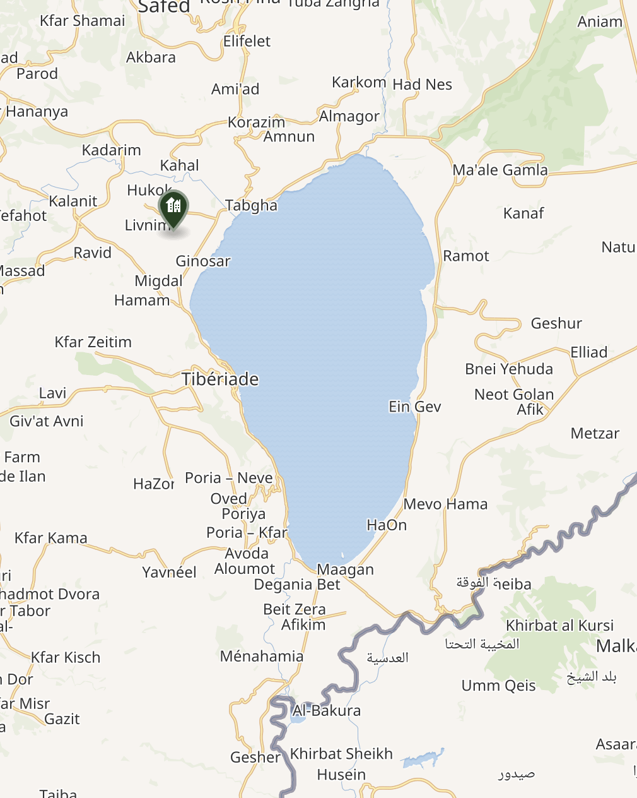

Galilée
Execution de Jean le Baptiste
Date: +32, Décembre/Janvier
Lieu: Tibériade, Galilée
Marc 6:14 : Hérode et Jésus
14 Le roi Hérode entendit parler de Jésus, car son nom était devenu célèbre. On disait : « Jean le Baptiste est ressuscité des morts ; voilà pourquoi le pouvoir de faire des miracles agit en lui. » 15 D’autres disaient : « C’est Elie. » D’autres disaient : « C’est un prophète semblable à l’un de nos prophètes. » 16 Entendant ces propos, Hérode disait : « Ce Jean que j’ai fait décapiter, c’est lui qui est ressuscité. »
Marc 6:17 : Mort de Jean le Baptiste
17 En effet, Hérode avait fait arrêter Jean et l’avait enchaîné en prison, à cause d’Hérodiade, la femme de son frère Philippe, qu’il avait épousée. 18 Car Jean disait à Hérode : « Il ne t’est pas permis de garder la femme de ton frère. » 19 Aussi, Hérodiade le haïssait et voulait le faire mourir, mais elle ne le pouvait pas, 20 car Hérode craignait Jean, sachant que c’était un homme juste et saint, et il le protégeait. Quand il l’avait entendu, il restait fort perplexe ; cependant il l’écoutait volontiers. 21 Mais un jour propice arriva lorsque Hérode, pour son anniversaire, donna un banquet à ses dignitaires, à ses officiers et aux notables de Galilée. 22 La fille de cette Hérodiade vint exécuter une danse et elle plut à Hérode et à ses convives. Le roi dit à la jeune fille : « Demande-moi ce que tu veux et je te le donnerai. » 23 Et il lui fit ce serment : « Tout ce que tu me demanderas, je te le donnerai, serait-ce la moitié de mon royaume. » 24 Elle sortit et dit à sa mère : « Que vais-je demander ? » Celle-ci répondit : « La tête de Jean le Baptiste. » 25 En toute hâte, elle rentra auprès du roi et lui demanda : « Je veux que tu me donnes tout de suite sur un plat la tête de Jean le Baptiste. » 26 Le roi devint triste, mais, à cause de son serment et des convives, il ne voulut pas lui refuser. 27 Aussitôt le roi envoya un garde avec l’ordre d’apporter la tête de Jean. Le garde alla le décapiter dans sa prison, 28 il apporta la tête sur un plat, il la donna à la jeune fille, et la jeune fille la donna à sa mère. 29 Quand ils l’eurent appris, les disciples de Jean vinrent prendre son cadavre et le déposèrent dans un tombeau.
Luc 3:19 : Fin du ministère de Jean le Baptiste
19 Mais Hérode le tétrarque, qu’il blâmait au sujet d’Hérodiade, la femme de son frère, et de tous les forfaits qu’il avait commis, 20 ajouta encore ceci à tout le reste : il enferma Jean en prison.
Luc 9:7 : Hérode intrigué par la réputation de Jésus
7 Hérode le tétrarque apprit tout ce qui se passait et il était perplexe car certains disaient que Jean était ressuscité des morts, 8 d’autres qu’Elie était apparu, d’autres qu’un prophète d’autrefois était ressuscité. 9 Hérode dit : « Jean, je l’ai fait moi-même décapiter. Mais quel est celui-ci, dont j’entends dire de telles choses ? » Et il cherchait à le voir.
Matthieu 14:1 : La mort de Jean-Baptiste
1 En ce temps-là, Hérode le tétrarque apprit la renommée de Jésus 2 et il dit à ses familiers : « Cet homme est Jean le Baptiste ! C’est lui, ressuscité des morts ; voilà pourquoi le pouvoir de faire des miracles agit en lui. » 3 En effet, Hérode avait fait arrêter et enchaîner Jean et l’avait emprisonné, à cause d’Hérodiade, la femme de son frère Philippe ; 4 car Jean lui disait : « Il ne t’est pas permis de la garder pour femme. » 5 Bien qu’il voulût le faire mourir, Hérode eut peur de la foule qui tenait Jean pour un prophète. 6 Or, à l’anniversaire d’Hérode, la fille d’Hérodiade exécuta une danse devant les invités et plut à Hérode. 7 Aussi s’engagea-t-il par serment à lui donner tout ce qu’elle demanderait. 8 Poussée par sa mère, elle lui dit : « Donne-moi ici, sur un plat, la tête de Jean le Baptiste. » 9 Le roi en fut attristé ; mais, à cause de son serment et des convives, il commanda de la lui donner 10 et envoya décapiter Jean dans sa prison. 11 Sa tête fut apportée sur un plat et donnée à la jeune fille qui l’apporta à sa mère. 12 Les disciples de Jean vinrent prendre le cadavre et l’ensevelirent ; puis ils allèrent informer Jésus.
Retour des 12 ; Jésus se retire à l’autre rive et nourrit une foule de 5000 hommes plus les femmes et les enfants
Date: +32, Mars/Avril, vers la Pâque
Lieu: Capharnaüm?, rive NE de le Lac de Tibériade, Galilée
Marc 6:30 : Retour des apôtres. Jésus nourrit cinq mille hommes au désert
30 Les apôtres se réunissent auprès de Jésus et ils lui rapportèrent tout ce qu’ils avaient fait et tout ce qu’ils avaient enseigné. 31 Il leur dit : « Vous autres, venez à l’écart dans un lieu désert et reposez-vous un peu. » Car il y avait beaucoup de monde qui venait et repartait, et eux n’avaient pas même le temps de manger. 32 Ils partirent en barque vers un lieu désert, à l’écart. 33 Les gens les virent s’éloigner et beaucoup les reconnurent. Alors, à pied, de toutes les villes, ils coururent à cet endroit et arrivèrent avant eux. 34 En débarquant, Jésus vit une grande foule. Il fut pris de pitié pour eux parce qu’ils étaient comme des brebis qui n’ont pas de berger, et il se mit à leur enseigner beaucoup de choses. 35 Puis, comme il était déjà tard, ses disciples s’approchèrent de lui pour lui dire : « L’endroit est désert et il est déjà tard. 36 Renvoie-les : qu’ils aillent dans les hameaux et les villages des environs s’acheter de quoi manger. » 37 Mais il leur répondit : « Donnez-leur vous-mêmes à manger. » Ils lui disent : « Nous faut-il aller acheter pour deux cents pièces d’argent de pains et leur donner à manger ? » 38 Il leur dit : « Combien avez-vous de pains ? Allez voir ! » Ayant vérifié, ils disent : « Cinq, et deux poissons. » 39 Et il leur commanda d’installer tout le monde par groupes sur l’herbe verte. 40 Ils s’étendirent par rangées de cent et de cinquante. 41 Jésus prit les cinq pains et les deux poissons, et levant son regard vers le ciel, il prononça la bénédiction, rompit les pains et il les donnait aux disciples pour qu’ils les offrent aux gens. Il partagea aussi les deux poissons entre tous. 42 Ils mangèrent tous et furent rassasiés. 43 Et l’on emporta les morceaux, qui remplissaient douze paniers, et aussi ce qui restait des poissons. 44 Ceux qui avaient mangé les pains étaient cinq mille hommes.
Luc 9:10 : Jésus rassasie une foule
10 A leur retour, les apôtres racontèrent à Jésus tout ce qu’ils avaient fait. Il les emmena et se retira à l’écart du côté d’une ville appelée Bethsaïda. 11 L’ayant su, les foules le suivirent. Jésus les accueillit ; il leur parlait du Règne de Dieu et il guérissait ceux qui en avaient besoin. 12 Mais le jour commença de baisser. Les Douze s’approchèrent et lui dirent : « Renvoie la foule ; qu’ils aillent loger dans les villages et les hameaux des environs et qu’ils y trouvent à manger, car nous sommes ici dans un endroit désert. » 13 Mais il leur dit : « Donnez-leur à manger vous-mêmes. » Alors ils dirent : « Nous n’avons pas plus de cinq pains et deux poissons… à moins d’aller nous-mêmes acheter des vivres pour tout ce peuple. » 14 Il y avait en effet environ cinq mille hommes. Il dit à ses disciples : « Faites-les s’installer par groupes d’une cinquantaine. » 15 Ils firent ainsi et les installèrent tous. 16 Jésus prit les cinq pains et les deux poissons et, levant son regard vers le ciel, il prononça sur eux la bénédiction, les rompit, et il les donnait aux disciples pour les offrir à la foule. 17 Ils mangèrent et furent tous rassasiés ; et l’on emporta ce qui leur restait des morceaux : douze paniers.
Matthieu 14:13 : Jésus nourrit cinq mille hommes
13 A cette nouvelle, Jésus se retira de là en barque vers un lieu désert, à l’écart. L’ayant appris, les foules le suivirent à pied de leurs diverses villes. 14 En débarquant, il vit une grande foule ; il fut pris de pitié pour eux et guérit leurs infirmes. 15 Le soir venu, les disciples s’approchèrent de lui et lui dirent : « L’endroit est désert et déjà l’heure est tardive ; renvoie donc les foules, qu’elles aillent dans les villages s’acheter des vivres. » 16 Mais Jésus leur dit : « Elles n’ont pas besoin d’y aller : donnez-leur vous-mêmes à manger. » 17 Alors ils lui disent : « Nous n’avons ici que cinq pains et deux poissons. » – 18 « Apportez-les-moi ici », dit-il. 19 Et, ayant donné l’ordre aux foules de s’installer sur l’herbe, il prit les cinq pains et les deux poissons et, levant son regard vers le ciel, il prononça la bénédiction ; puis, rompant les pains, il les donna aux disciples, et les disciples aux foules. 20 Ils mangèrent tous et furent rassasiés ; et l’on emporta ce qui restait des morceaux : douze paniers pleins ! 21 Or ceux qui avaient mangé étaient environ cinq mille hommes, sans compter les femmes et les enfants.
Jean 6:1 : Jésus nourrit une grande foule
1 Après cela, Jésus passa sur l’autre rive de la mer de Galilée, dite encore de Tibériade. 2 Une grande foule le suivait parce que les gens avaient vu les signes qu’il opérait sur les malades. 3 C’est pourquoi Jésus gravit la montagne et s’y assit avec ses disciples. 4 C’était bientôt la fête juive de la Pâque. 5 Or, ayant levé les yeux, Jésus vit une grande foule qui venait à lui. Il dit à Philippe : « Où achèterons-nous des pains pour qu’ils aient de quoi manger ? » 6 En parlant ainsi il le mettait à l’épreuve ; il savait, quant à lui, ce qu’il allait faire. 7 Philippe lui répondit : « Deux cents deniers de pain ne suffiraient pas pour que chacun reçoive un petit morceau. » 8 Un de ses disciples, André, le frère de Simon-Pierre, lui dit : 9 « Il y a là un garçon qui possède cinq pains d’orge et deux petits poissons ; mais qu’est-ce que cela pour tant de gens ? » 10 Jésus dit : « Faites-les asseoir. » Il y avait beaucoup d’herbe à cet endroit. Ils s’assirent donc ; ils étaient environ cinq mille hommes. 11 Alors Jésus prit les pains, il rendit grâce et les distribua aux convives. Il fit de même avec les poissons ; il leur en donna autant qu’ils en désiraient. 12 Lorsqu’ils furent rassasiés, Jésus dit à ses disciples : « Rassemblez les morceaux qui restent, de sorte que rien ne soit perdu. » 13 Ils les rassemblèrent et ils remplirent douze paniers avec les morceaux des cinq pains d’orge qui étaient restés à ceux qui avaient mangé. 14 A la vue du signe qu’il venait d’opérer, les gens dirent : « Celui-ci est vraiment le Prophète, celui qui doit venir dans le monde. » 15 Mais Jésus, sachant qu’on allait venir l’enlever pour le faire roi, se retira à nouveau, seul, dans la montagne.
Envoi des disciples à Bethsaïda, de l’autre côté du lac, et de nuit Jésus vient à eux marchant sur l’eau
Date: +32, Avril/Mai, vers la Pâque
Lieu: Galilée
Marc 6:45 : Jésus marche sur la mer
45 Aussitôt, Jésus obligea ses disciples à remonter dans la barque et à le précéder sur l’autre rive, vers Bethsaïda, pendant que lui-même renvoyait la foule. 46 Après l’avoir congédiée, il partit dans la montagne pour prier. 47 Le soir venu, la barque était au milieu de la mer, et lui, seul, à terre. 48 Voyant qu’ils se battaient à ramer contre le vent qui leur était contraire, vers la fin de la nuit, il vient vers eux en marchant sur la mer, et il allait les dépasser. 49 En le voyant marcher sur la mer, ils crurent que c’était un fantôme et ils poussèrent des cris. 50 Car ils le virent tous et ils furent affolés. Mais lui aussitôt leur parla ; il leur dit : « Confiance, c’est moi, n’ayez pas peur. » 51 Il monta auprès d’eux dans la barque, et le vent tomba. Ils étaient extrêmement bouleversés. 52 En effet, ils n’avaient rien compris à l’affaire des pains, leur cœur était endurci.
Marc 6:53 : Guérisons à Gennésareth
53 Après la traversée, ils touchèrent terre à Gennésareth et ils abordèrent. 54 Dès qu’ils eurent débarqué, les gens reconnurent Jésus ;
Matthieu 14:22 : Jésus marche sur la mer
22 Aussitôt Jésus obligea les disciples à remonter dans la barque et à le précéder sur l’autre rive, pendant qu’il renverrait les foules. 23 Et, après avoir renvoyé les foules, il monta dans la montagne pour prier à l’écart. Le soir venu, il était là, seul. 24 La barque se trouvait déjà à plusieurs centaines de mètres de la terre ; elle était battue par les vagues, le vent étant contraire. 25 Vers la fin de la nuit, il vint vers eux en marchant sur la mer. 26 En le voyant marcher sur la mer, les disciples furent affolés : « C’est un fantôme », disaient-ils, et, de peur, ils poussèrent des cris. 27 Mais aussitôt, Jésus leur parla : « Confiance, c’est moi, n’ayez pas peur ! » 28 S’adressant à lui, Pierre lui dit : « Seigneur, si c’est bien toi, ordonne-moi de venir vers toi sur les eaux. » – 29 « Viens », dit-il. Et Pierre, descendu de la barque, marcha sur les eaux et alla vers Jésus. 30 Mais, en voyant le vent, il eut peur et, commençant à couler, il s’écria : « Seigneur, sauve-moi ! » 31 Aussitôt, Jésus, tendant la main, le saisit en lui disant : « Homme de peu de foi, pourquoi as-tu douté ? » 32 Et quand ils furent montés dans la barque, le vent tomba. 33 Ceux qui étaient dans la barque se prosternèrent devant lui et lui dirent : « Vraiment, tu es Fils de Dieu ! »
Jean 6:16 : La marche sur la mer
16 Le soir venu, ses disciples descendirent jusqu’à la mer. 17 Ils montèrent dans une barque et se dirigèrent vers Capharnaüm, sur l’autre rive. Déjà l’obscurité s’était faite, et Jésus ne les avait pas encore rejoints. 18 Un grand vent soufflait et la mer était houleuse. 19 Ils avaient ramé environ vingt-cinq à trente stades, lorsqu’ils voient Jésus marcher sur la mer et s’approcher de la barque. Alors ils furent pris de peur, 20 mais Jésus leur dit : « C’est moi, n’ayez pas peur ! » 21 Ils voulurent le prendre dans la barque, mais aussitôt la barque toucha terre au lieu où ils allaient.
La multitude nourrie miraculeusement cherche et trouve Jésus à Capharnaüm ; discours dans la synagogue et confession de Pierre
Date: +32, Avril/Mai, vers la Pâque
Lieu: Capharnaüm, Galilée
Jean 6:22 : Jésus, le pain de vie
22 Le lendemain, la foule, restée sur l’autre rive, se rendit compte qu’il y avait eu là une seule barque et que Jésus n’avait pas accompagné ses disciples dans leur barque ; ceux-ci étaient partis seuls. 23 Toutefois, venant de Tibériade, d’autres barques arrivèrent près de l’endroit où ils avaient mangé le pain après que le Seigneur eut rendu grâce. 24 Lorsque la foule eut constaté que ni Jésus ni ses disciples ne se trouvaient là, les gens montèrent dans les barques et ils s’en allèrent à Capharnaüm, à la recherche de Jésus. 25 Et quand ils l’eurent trouvé de l’autre côté de la mer, ils lui dirent : « Rabbi, quand es-tu arrivé ici ? » 26 Jésus leur répondit : « En vérité, en vérité, je vous le dis, ce n’est pas parce que vous avez vu des signes que vous me cherchez, mais parce que vous avez mangé des pains à satiété. 27 Il faut vous mettre à l’œuvre pour obtenir non pas cette nourriture périssable, mais la nourriture qui demeure en vie éternelle, celle que le Fils de l’homme vous donnera, car c’est lui que le Père, qui est Dieu, a marqué de son sceau. » 28 Ils lui dirent alors : « Que nous faut-il faire pour travailler aux œuvres de Dieu ? » 29 Jésus leur répondit : « L’œuvre de Dieu c’est de croire en celui qu’Il a envoyé. » 30 Ils lui répliquèrent : « Mais toi, quel signe fais-tu donc, pour que nous voyions et que nous te croyions ? Quelle est ton œuvre ? 31 Au désert, nos pères ont mangé la manne, ainsi qu’il est écrit : Il leur a donné à manger un pain qui vient du ciel. » 32 Mais Jésus leur dit : « En vérité, en vérité, je vous le dis, ce n’est pas Moïse qui vous a donné le pain du ciel, mais c’est mon Père qui vous donne le véritable pain du ciel. 33 Car le pain de Dieu, c’est celui qui descend du ciel et qui donne la vie au monde. » 34 Ils lui dirent alors : « Seigneur, donne-nous toujours ce pain-là ! » 35 Jésus leur dit : « C’est moi qui suis le pain de vie ; celui qui vient à moi n’aura pas faim ; celui qui croit en moi jamais n’aura soif. 36 Mais je vous l’ai dit : vous avez vu et pourtant vous ne croyez pas. 37 Tous ceux que le Père me donne viendront à moi, et celui qui vient à moi, je ne le rejetterai pas, 38 car je suis descendu du ciel pour faire, non pas ma propre volonté, mais la volonté de celui qui m’a envoyé. 39 Or la volonté de celui qui m’a envoyé, c’est que je ne perde aucun de ceux qu’il m’a donnés, mais que je les ressuscite au dernier jour. 40 Telle est en effet la volonté de mon Père : que quiconque voit le Fils et croit en lui ait la vie éternelle, et moi, je le ressusciterai au dernier jour. » 41 Dès lors, les Juifs se mirent à murmurer à son sujet parce qu’il avait dit : « Je suis le pain qui descend du ciel. » 42 Et ils ajoutaient : « N’est-ce pas Jésus, le fils de Joseph ? Ne connaissons-nous pas son père et sa mère ? Comment peut-il déclarer maintenant : “Je suis descendu du ciel” ? » 43 Jésus reprit la parole et leur dit : « Cessez de murmurer entre vous ! 44 Nul ne peut venir à moi si le Père qui m’a envoyé ne l’attire, et moi je le ressusciterai au dernier jour. 45 Dans les Prophètes il est écrit : Tous seront instruits par Dieu. Quiconque a entendu ce qui vient du Père et reçoit son enseignement vient à moi. 46 C’est que nul n’a vu le Père, si ce n’est celui qui vient de Dieu. Lui, il a vu le Père. 47 En vérité, en vérité, je vous le dis, celui qui croit a la vie éternelle. 48 Je suis le pain de vie. 49 Au désert, vos pères ont mangé la manne, et ils sont morts. 50 Tel est le pain qui descend du ciel, que celui qui en mangera ne mourra pas. 51 « Je suis le pain vivant qui descend du ciel. Celui qui mangera de ce pain vivra pour l’éternité. Et le pain que je donnerai, c’est ma chair, donnée pour que le monde ait la vie. » 52 Sur quoi, les Juifs se mirent à discuter violemment entre eux : « Comment celui-là peut-il nous donner sa chair à manger ? » 53 Jésus leur dit alors : « En vérité, en vérité, je vous le dis, si vous ne mangez pas la chair du Fils de l’homme et si vous ne buvez pas son sang, vous n’aurez pas en vous la vie. 54 Celui qui mange ma chair et boit mon sang a la vie éternelle, et moi, je le ressusciterai au dernier jour. 55 Car ma chair est vraie nourriture, et mon sang vraie boisson. 56 Celui qui mange ma chair et boit mon sang demeure en moi et moi en lui. 57 Et comme le Père qui est vivant m’a envoyé et que je vis par le Père, ainsi celui qui me mangera vivra par moi. 58 Tel est le pain qui est descendu du ciel : il est bien différent de celui que vos pères ont mangé ; ils sont morts, eux, mais celui qui mangera du pain que voici vivra pour l’éternité. » 59 Tels furent les enseignements de Jésus, dans la synagogue, à Capharnaüm.
Jean 6:60 : La décision de la foi
60 Après l’avoir entendu, beaucoup de ses disciples commencèrent à dire : « Cette parole est rude ! Qui peut l’écouter ? » 61 Mais, sachant en lui-même que ses disciples murmuraient à ce sujet, Jésus leur dit : « C’est donc pour vous une cause de scandale ? 62 Et si vous voyiez le Fils de l’homme monter là où il était auparavant… ? 63 C’est l’Esprit qui vivifie, la chair ne sert de rien. Les paroles que je vous ai dites sont esprit et vie. 64 Mais il en est parmi vous qui ne croient pas. » En fait, Jésus savait dès le début quels étaient ceux qui ne croyaient pas et qui était celui qui allait le livrer. 65 Il ajouta : « C’est bien pourquoi je vous ai dit : “Personne ne peut venir à moi si cela ne lui est donné par le Père.” » 66 Dès lors, beaucoup de ses disciples s’en retournèrent et cessèrent de faire route avec lui. 67 Alors Jésus dit aux Douze : « Et vous, ne voulez-vous pas partir ? » 68 Simon-Pierre lui répondit : « Seigneur, à qui irions-nous ? Tu as des paroles de vie éternelle. 69 Et nous, nous avons cru et nous avons connu que tu es le Saint de Dieu. » 70 Jésus leur répondit : « N’est-ce pas moi qui vous ai choisis, vous les Douze ? et cependant l’un de vous est un diable ! » 71 Il désignait ainsi Judas, fils de Simon l’Iscariote ; car c’était lui qui allait le livrer, lui, l’un des Douze.
Plusieurs guérisons dans la plaine de Génézareth

Emplacement de Génézareth 
Vue du lac depuis Génézareth
Date: +32, Avril/Mai, vers la Pâque
Lieu: Génézareth, Galilée
Marc 6:55 : Guérisons à Gennésareth
55 ils parcoururent tout le pays et se mirent à apporter les malades sur des brancards là où l’on apprenait qu’il était. 56 Partout où il entrait, villages, villes ou hameaux, on mettait les malades sur les places ; on le suppliait de les laisser toucher seulement la frange de son vêtement ; et ceux qui le touchaient étaient tous sauvés.
Matthieu 14:34 : Guérison à Gennésareth
34 Après la traversée, ils touchèrent terre à Gennésareth. 35 Les gens de cet endroit le reconnurent, firent prévenir toute la région, et on lui amena tous les malades. 36 On le suppliait de les laisser seulement toucher la frange de son vêtement ; et tous ceux qui la touchèrent furent sauvés.
Les pharisiens et la tradition
Date: +32, après la Pâque
Lieu: Capharnaüm ?, Galilée
Marc 7:1 : Discussions avec les Pharisiens sur les traditions
1 Les Pharisiens et quelques scribes venus de Jérusalem se rassemblent auprès de Jésus. 2 Ils voient que certains de ses disciples prennent leurs repas avec des mains impures, c’est-à-dire sans les avoir lavées. 3 En effet, les Pharisiens, comme tous les Juifs, ne mangent pas sans s’être lavé soigneusement les mains, par attachement à la tradition des anciens ; 4 en revenant du marché, ils ne mangent pas sans avoir fait des ablutions ; et il y a beaucoup d’autres pratiques traditionnelles auxquelles ils sont attachés : lavages rituels des coupes, des cruches et des plats. 5 Les Pharisiens et les scribes demandent donc à Jésus : « Pourquoi tes disciples ne se conduisent-ils pas conformément à la tradition des anciens, mais prennent-ils leur repas avec des mains impures ? » 6 Il leur dit : « Esaïe a bien prophétisé à votre sujet, hypocrites, car il est écrit : Ce peuple m’honore des lèvres, mais son cœur est loin de moi ; 7 c’est en vain qu’ils me rendent un culte car les doctrines qu’ils enseignent ne sont que préceptes d’hommes. 8 Vous laissez de côté le commandement de Dieu et vous vous attachez à la tradition des hommes. » 9 Il leur disait : « Vous repoussez bel et bien le commandement de Dieu pour garder votre tradition. 10 Car Moïse a dit : “Honore ton père et ta mère”, et encore : “Celui qui insulte père ou mère, qu’il soit puni de mort.” 11 Mais vous, vous dites : “Si quelqu’un dit à son père ou à sa mère : le secours que tu devais recevoir de moi est qorbân, c’est-à-dire offrande sacrée…” 12 vous lui permettez de ne plus rien faire pour son père ou pour sa mère : 13 vous annulez ainsi la parole de Dieu par la tradition que vous transmettez. Et vous faites beaucoup de choses du même genre. » 14 Puis, appelant de nouveau la foule, il leur disait : « Ecoutez-moi tous et comprenez. 15 Il n’y a rien d’extérieur à l’homme qui puisse le rendre impur en pénétrant en lui, mais ce qui sort de l’homme, voilà ce qui rend l’homme impur. » [ 16 ] 17 Lorsqu’il fut entré dans la maison, loin de la foule, ses disciples l’interrogeaient sur cette parole énigmatique. 18 Il leur dit : « Vous aussi, êtes-vous donc sans intelligence ? Ne savez-vous pas que rien de ce qui pénètre de l’extérieur dans l’homme ne peut le rendre impur, 19 puisque cela ne pénètre pas dans son cœur, mais dans son ventre, puis s’en va dans la fosse ? » Il déclarait ainsi que tous les aliments sont purs. 20 Il disait : « Ce qui sort de l’homme, c’est cela qui rend l’homme impur. 21 En effet, c’est de l’intérieur, c’est du cœur des hommes que sortent les intentions mauvaises, inconduite, vols, meurtres, 22 adultères, cupidité, perversités, ruse, débauche, envie, injures, vanité, déraison. 23 Tout ce mal sort de l’intérieur et rend l’homme impur. »
Matthieu 15:1 : Controverse sur la tradition
1 Alors des Pharisiens et des scribes de Jérusalem s’avancent vers Jésus et lui disent : 2 « Pourquoi tes disciples transgressent-ils la tradition des anciens ? En effet, ils ne se lavent pas les mains, quand ils prennent leurs repas. » 3 Il leur répliqua : « Et vous, pourquoi transgressez-vous le commandement de Dieu au nom de votre tradition ? 4 Dieu a dit en effet : Honore ton père et ta mère, et encore : Celui qui maudit père ou mère, qu’il soit puni de mort. 5 Mais vous, vous dites : “Quiconque dit à son père ou à sa mère : Le secours que tu devais recevoir de moi est offrande sacrée, 6 celui-là n’aura pas à honorer son père.” Et ainsi vous avez annulé la parole de Dieu au nom de votre tradition. 7 Hypocrites ! Esaïe a bien prophétisé à votre sujet, quand il a dit : 8 Ce peuple m’honore des lèvres, mais son cœur est loin de moi. 9 C’est en vain qu’ils me rendent un culte, car les doctrines qu’ils enseignent ne sont que préceptes d’hommes. »
Matthieu 15:10 : Le pur et l’impur
10 Puis, appelant la foule, il leur dit : « Ecoutez et comprenez ! 11 Ce n’est pas ce qui entre dans la bouche qui rend l’homme impur ; mais ce qui sort de la bouche, voilà ce qui rend l’homme impur. » 12 Alors les disciples s’approchèrent et lui dirent : « Sais-tu qu’en entendant cette parole, les Pharisiens ont été scandalisés ? » 13 Il répondit : « Tout plant que n’a pas planté mon Père céleste sera arraché. 14 Laissez-les : ce sont des aveugles qui guident des aveugles. Or si un aveugle guide un aveugle, tous les deux tomberont dans un trou ! » 15 Pierre intervint et lui dit : « Explique-nous cette parole énigmatique. » 16 Jésus dit : « Etes-vous encore, vous aussi, sans intelligence ? 17 Ne savez-vous pas que tout ce qui pénètre dans la bouche passe dans le ventre, puis est rejeté dans la fosse ? 18 Mais ce qui sort de la bouche provient du cœur, et c’est cela qui rend l’homme impur. 19 Du cœur en effet proviennent intentions mauvaises, meurtres, adultères, inconduites, vols, faux témoignages, injures. 20 C’est là ce qui rend l’homme impur ; mais manger sans s’être lavé les mains ne rend pas l’homme impur. »
Jésus se dirige vers Tyr et Sidon ; guérison de la fille de la femme cananéenne
Date: +32, après la Pâque
Lieu: Phénicie, Décapole
Marc 7:24 : La foi d’une Syro-Phénicienne
24 Parti de là, Jésus se rendit dans le territoire de Tyr. Il entra dans une maison et il ne voulait pas qu’on le sache, mais il ne put rester ignoré. 25 Tout de suite, une femme dont la fille avait un esprit impur entendit parler de lui et vint se jeter à ses pieds. 26 Cette femme était païenne, syro-phénicienne de naissance. Elle demandait à Jésus de chasser le démon hors de sa fille. 27 Jésus lui disait : « Laisse d’abord les enfants se rassasier, car ce n’est pas bien de prendre le pain des enfants pour le jeter aux petits chiens. » 28 Elle lui répondit : « C’est vrai, Seigneur, mais les petits chiens, sous la table, mangent des miettes des enfants. » 29 Il lui dit : « A cause de cette parole, va, le démon est sorti de ta fille. » 30 Elle retourna chez elle et trouva l’enfant étendue sur le lit : le démon l’avait quittée.
Matthieu 15:21 : La foi de la Cananéenne
21 Partant de là, Jésus se retira dans la région de Tyr et de Sidon. 22 Et voici qu’une Cananéenne vint de là et elle se mit à crier : « Aie pitié de moi, Seigneur, Fils de David ! Ma fille est cruellement tourmentée par un démon. » 23 Mais il ne lui répondit pas un mot. Ses disciples, s’approchant, lui firent cette demande : « Renvoie-la, car elle nous poursuit de ses cris. » 24 Jésus répondit : « Je n’ai été envoyé qu’aux brebis perdues de la maison d’Israël. » 25 Mais la femme vint se prosterner devant lui : « Seigneur, dit-elle, viens à mon secours ! » 26 Il répondit : « Il n’est pas bien de prendre le pain des enfants pour le jeter aux petits chiens. » – 27 « C’est vrai, Seigneur ! reprit-elle ; et justement les petits chiens mangent des miettes qui tombent de la table de leurs maîtres. » 28 Alors Jésus lui répondit : « Femme, ta foi est grande ! Qu’il t’arrive comme tu le veux ! » Et sa fille fut guérie dès cette heure-là.
Retour par la Décapole vers le Lac de Tibériade ; nombreuses guérisons ; multiplication des pains à une foule d’au moins 4000 hommes
Date: +32, après la Pâque
Lieu: Phénicie, Décapole
Marc 7:31 : Guérison d’un sourd-muet
31 Jésus quitta le territoire de Tyr et revint par Sidon vers la mer de Galilée en traversant le territoire de la Décapole. 32 On lui amène un sourd qui, de plus, parlait difficilement et on le supplie de lui imposer la main. 33 Le prenant loin de la foule, à l’écart, Jésus lui mit les doigts dans les oreilles, cracha et lui toucha la langue. 34 Puis, levant son regard vers le ciel, il soupira. Et il lui dit : « Ephphata », c’est-à-dire : « Ouvre-toi. » 35 Aussitôt ses oreilles s’ouvrirent, sa langue se délia, et il parlait correctement. 36 Jésus leur recommanda de n’en parler à personne : mais plus il le leur recommandait, plus ceux-ci le proclamaient. 37 Ils étaient très impressionnés et ils disaient : « Il a bien fait toutes choses ; il fait entendre les sourds et parler les muets. »
Marc 8:1 : Jésus nourrit quatre mille hommes
1 En ces jours-là, comme il y avait de nouveau une grande foule et qu’elle n’avait pas de quoi manger, Jésus appelle ses disciples et leur dit : 2 « J’ai pitié de cette foule, car voilà déjà trois jours qu’ils restent auprès de moi et ils n’ont pas de quoi manger. 3 Si je les renvoie chez eux à jeun, ils vont défaillir en chemin, et il y en a qui sont venus de loin. » 4 Ses disciples lui répondirent : « Où trouver de quoi les rassasier de pains, ici dans un désert ? » 5 Il leur demandait : « Combien avez-vous de pains ? » – « Sept », dirent-ils. 6 Et il ordonne à la foule de s’étendre par terre. Puis il prit les sept pains et, après avoir rendu grâce, il les rompit et il les donnait à ses disciples pour qu’ils les offrent. Et ils les offrirent à la foule. 7 Ils avaient aussi quelques petits poissons. Jésus prononça sur eux la bénédiction et dit de les offrir également. 8 Ils mangèrent et furent rassasiés. Et l’on emporta les morceaux qui restaient : sept corbeilles ; 9 or ils étaient environ quatre mille. Puis Jésus les renvoya ;
Matthieu 15:29 : Guérisons près du lac
29 De là Jésus gagna les bords de la mer de Galilée. Il monta dans la montagne, et là il s’assit. 30 Des gens en grande foule vinrent à lui, ayant avec eux des boiteux, des aveugles, des estropiés, des muets et bien d’autres encore. Ils les déposèrent à ses pieds, et il les guérit. 31 Aussi les foules s’émerveillaient-elles à la vue des muets qui parlaient, des estropiés qui redevenaient valides, des boiteux qui marchaient droit et des aveugles qui recouvraient la vue. Et elles rendirent gloire au Dieu d’Israël.
Matthieu 15:32 : Jésus nourrit quatre mille hommes
32 Jésus appela ses disciples et leur dit : « J’ai pitié de cette foule, car voilà déjà trois jours qu’ils restent auprès de moi, et ils n’ont pas de quoi manger. Je ne veux pas les renvoyer à jeun : ils pourraient défaillir en chemin. » 33 Les disciples lui disent : « D’où nous viendra-t-il dans un désert assez de pains pour rassasier une telle foule ? » 34 Jésus leur dit : « Combien de pains avez-vous ? » – « Sept, dirent-ils, et quelques petits poissons. » 35 Il ordonna à la foule de s’étendre par terre, 36 prit les sept pains et les poissons, et, après avoir rendu grâce, il les rompit et les donnait aux disciples, et les disciples aux foules. 37 Et ils mangèrent tous et furent rassasiés ; on emporta ce qui restait des morceaux : sept corbeilles pleines. 38 Or, ceux qui avaient mangé étaient au nombre de quatre mille hommes, sans compter les femmes et les enfants.
Jésus se rend à Dalmanutha
Date: +32, après la Pâque
Lieu: Magdala (Magadân), Galilée
Marc 8:10 : Jésus nourrit quatre mille hommes
10 et aussitôt il monta dans la barque avec ses disciples et se rendit dans la région de Dalmanoutha.
Matthieu 15:39 : Jésus nourrit quatre mille hommes
39 Après avoir renvoyé les foules, Jésus monta dans la barque et se rendit dans le territoire de Magadan.
Pharisiens et sadducéens cherchent un signe
Date: +32, après la Pâque
Lieu: Magdala (Magadân), Galilée
Marc 8:11 : Le signe refusé aux Pharisiens
11 Les Pharisiens vinrent et se mirent à discuter avec Jésus ; pour lui tendre un piège, ils lui demandent un signe qui vienne du ciel. 12 Poussant un profond soupir, Jésus dit : « Pourquoi cette génération demande-t-elle un signe ? En vérité, je vous le déclare, il ne sera pas donné de signe à cette génération. »
Matthieu 16:1 : Les signes des temps
1 Les Pharisiens et les Sadducéens s’avancèrent et, pour lui tendre un piège, lui demandèrent de leur montrer un signe qui vienne du ciel. 2 Il leur répondit : « Le soir venu, vous dites : “Il va faire beau temps, car le ciel est rouge feu” ; 3 et le matin : “Aujourd’hui, mauvais temps, car le ciel est rouge sombre.” Ainsi vous savez interpréter l’aspect du ciel, et les signes des temps, vous n’en êtes pas capables ! 4 Génération mauvaise et adultère qui réclame un signe ! En fait de signe, il ne lui en sera pas donné d’autre que le signe de Jonas. » Il les planta là et partit.
Quitte pharisiens et sadducéens jugés ; les 12 lents de cœur
Date: +32, après la Pâque
Lieu: Lac de Tibériade, Galilée
Marc 8:13 : Le signe refusé aux Pharisiens
13 Et les quittant, il remonta dans la barque et il partit pour l’autre rive.
Marc 8:14 : L’inintelligence des disciples
14 Les disciples avaient oublié de prendre des pains et n’en avaient qu’un seul avec eux dans la barque. 15 Jésus leur faisait cette recommandation : « Attention ! prenez garde au levain des Pharisiens et à celui d’Hérode. » 16 Ils se mirent à discuter entre eux parce qu’ils n’avaient pas de pains. 17 Jésus s’en aperçoit et leur dit : « Pourquoi discutez-vous parce que vous n’avez pas de pains ? Vous ne saisissez pas encore et vous ne comprenez pas ? Avez-vous le cœur endurci ? 18 Vous avez des yeux : ne voyez-vous pas ? Vous avez des oreilles : n’entendez-vous pas ? Ne vous rappelez-vous pas, 19 quand j’ai rompu les cinq pains pour les cinq mille hommes, combien de paniers pleins de morceaux vous avez emportés ? » Ils disent : « Douze. » 20 « Et quand j’ai rompu les sept pains pour les quatre mille hommes, combien de corbeilles pleines de morceaux avez-vous emportées ? » Ils disent : « Sept. » 21 Et il leur disait : « Ne comprenez-vous pas encore ? »
Matthieu 16:5 : Le levain des Pharisiens
5 En passant sur l’autre rive, les disciples oublièrent de prendre des pains. 6 Jésus leur dit : « Attention ! Gardez-vous du levain des Pharisiens et des Sadducéens ! » 7 Eux se faisaient cette réflexion : « C’est que nous n’avons pas pris de pains. » 8 Mais Jésus s’en aperçut et leur dit : « Gens de peu de foi, pourquoi cette réflexion sur le fait que vous n’avez pas de pains ? 9 Vous ne saisissez pas encore ? Vous ne vous rappelez pas les cinq pains pour les cinq mille, et combien de paniers vous avez remportés ? 10 Ni les sept pains pour les quatre mille et combien de corbeilles vous avez remportées ? 11 Comment ne saisissez-vous pas que je ne vous parlais pas de pains, quand je vous disais : Gardez-vous du levain des Pharisiens et des Sadducéens ! » 12 Alors ils comprirent qu’il n’avait pas dit de se garder du levain des pains, mais de l’enseignement des Pharisiens et des Sadducéens.
Guérison d’un aveugle

Carte 4
Date: +32, après la Pâque
Lieu: Bethsaïde, Galilée
Marc 8:22 : Guérison d’un aveugle
22 Ils arrivent à Bethsaïda ; on lui amène un aveugle et on le supplie de le toucher. 23 Prenant l’aveugle par la main, il le conduisit hors du village. Il mit de la salive sur ses yeux, lui imposa les mains et il lui demandait : « Vois-tu quelque chose ? » 24 Ayant ouvert les yeux, il disait : « J’aperçois les gens, je les vois comme des arbres, mais ils marchent. » 25 Puis, Jésus lui posa de nouveau les mains sur les yeux et l’homme vit clair ; il était guéri et voyait tout distinctement. 26 Jésus le renvoya chez lui en disant : « N’entre même pas dans le village. »
Jésus sur le territoire de Césarée de Philippe ; la confession de Pierre
Date: +32, après la Pâque
Lieu: Césarée de Philippe, Galilée
Marc 8:27 : Pierre reconnaît en Jésus le Messie
27 Jésus s’en alla avec ses disciples vers les villages voisins de Césarée de Philippe. En chemin, il interrogeait ses disciples : « Qui suis-je, au dire des hommes ? » 28 Ils lui dirent : « Jean le Baptiste ; pour d’autres, Elie ; pour d’autres, l’un des prophètes. » 29 Et lui leur demandait : « Et vous, qui dites-vous que je suis ? » Prenant la parole, Pierre lui répond : « Tu es le Christ. » 30 Et il leur commanda sévèrement de ne parler de lui à personne.
Luc 9:18 : Pierre reconnaît Jésus comme le Messie. Jésus précise qu’il doit mourir
18 Or, comme il était en prière à l’écart, les disciples étaient avec lui, et il les interrogea : « Qui suis-je au dire des foules ? » 19 Ils répondirent : « Jean le Baptiste ; pour d’autres, Elie ; pour d’autres, tu es un prophète d’autrefois qui est ressuscité. » 20 Il leur dit : « Et vous, qui dites-vous que je suis ? » Pierre, prenant la parole, répondit : « Le Christ de Dieu. » 21 Et lui, avec sévérité, leur ordonna de ne le dire à personne,
Matthieu 16:13 : Pierre reconnaît en Jésus le Fils de Dieu
13 Arrivé dans la région de Césarée de Philippe, Jésus interrogeait ses disciples : « Au dire des hommes, qui est le Fils de l’homme ? » 14 Ils dirent : « Pour les uns, Jean le Baptiste ; pour d’autres, Elie ; pour d’autres encore, Jérémie ou l’un des prophètes. » 15 Il leur dit : « Et vous, qui dites-vous que je suis ? » 16 Prenant la parole, Simon-Pierre répondit : « Tu es le Christ, le Fils du Dieu vivant. » 17 Reprenant alors la parole, Jésus lui déclara : « Heureux es-tu, Simon fils de Jonas, car ce n’est pas la chair et le sang qui t’ont révélé cela, mais mon Père qui est aux cieux. 18 Et moi, je te le déclare : Tu es Pierre, et sur cette pierre je bâtirai mon Eglise, et la Puissance de la mort n’aura pas de force contre elle. 19 Je te donnerai les clés du Royaume des cieux ; tout ce que tu lieras sur la terre sera lié aux cieux, et tout ce que tu délieras sur la terre sera délié aux cieux. » 20 Alors il commanda sévèrement aux disciples de ne dire à personne qu’il était le Christ.
Annonce Sa mort et Sa résurrection ; Pierre réprimandé
Date: +32, après la Pâque
Lieu: Région de Césarée de Philippe, Galilée
Marc 8:31 : Jésus annonce sa passion et sa résurrection
31 Puis il commença à leur enseigner qu’il fallait que le Fils de l’homme souffre beaucoup, qu’il soit rejeté par les anciens, les grands prêtres et les scribes, qu’il soit mis à mort et que, trois jours après, il ressuscite. 32 Il tenait ouvertement ce langage. Pierre, le tirant à part, se mit à le réprimander. 33 Mais lui, se retournant et voyant ses disciples, réprimanda Pierre ; il lui dit : « Retire-toi ! Derrière moi, Satan, car tes vues ne sont pas celles de Dieu, mais celles des hommes. »
Marc 8:34 : Comment il faut suivre Jésus
34 Puis il fit venir la foule avec ses disciples et il leur dit : « Si quelqu’un veut venir à ma suite, qu’il se renie lui-même et prenne sa croix, et qu’il me suive. 35 En effet, qui veut sauver sa vie, la perdra ; mais qui perdra sa vie à cause de moi et de l’Evangile, la sauvera. 36 Et quel avantage l’homme a-t-il à gagner le monde entier, s’il le paie de sa vie ? 37 Que pourrait donner l’homme qui ait la valeur de sa vie ? 38 Car si quelqu’un a honte de moi et de mes paroles au milieu de cette génération adultère et pécheresse, le Fils de l’homme aussi aura honte de lui, quand il viendra dans la gloire de son Père avec les saints anges. »
Marc 9:1 :
1 Et il leur disait : « En vérité, je vous le déclare, parmi ceux qui sont ici, certains ne mourront pas avant de voir le Règne de Dieu venu avec puissance. »
Luc 9:22 : Pierre reconnaît Jésus comme le Messie. Jésus précise qu’il doit mourir
22 en expliquant : « Il faut que le Fils de l’homme souffre beaucoup, qu’il soit rejeté par les anciens, les grands prêtres et les scribes, qu’il soit mis à mort et que, le troisième jour, il ressuscite. »
Luc 9:23 : Comment suivre Jésus
23 Puis il dit à tous : « Si quelqu’un veut venir à ma suite, qu’il se renie lui-même et prenne sa croix chaque jour, et qu’il me suive. 24 En effet, qui veut sauver sa vie, la perdra ; mais qui perd sa vie à cause de moi, la sauvera. 25 Et quel avantage l’homme a-t-il à gagner le monde entier, s’il se perd ou se ruine lui-même ? 26 Car si quelqu’un a honte de moi et de mes paroles, le Fils de l’homme aura honte de lui quand il viendra dans sa gloire, et dans celle du Père et des saints anges. 27 Vraiment, je vous le déclare, parmi ceux qui sont ici, certains ne mourront pas avant de voir le Règne de Dieu. »
Matthieu 16:21 : Jésus annonce sa passion et sa résurrection
21 A partir de ce moment, Jésus Christ commença à montrer à ses disciples qu’il lui fallait s’en aller à Jérusalem, souffrir beaucoup de la part des anciens, des grands prêtres et des scribes, être mis à mort et, le troisième jour, ressusciter. 22 Pierre, le tirant à part, se mit à le réprimander, en disant : « Dieu t’en préserve, Seigneur ! Non, cela ne t’arrivera pas ! » 23 Mais lui, se retournant, dit à Pierre : « Retire-toi ! Derrière moi, Satan ! Tu es pour moi occasion de chute, car tes vues ne sont pas celles de Dieu, mais celles des hommes. »
Matthieu 16:24 : Conditions pour suivre Jésus
24 Alors Jésus dit à ses disciples : « Si quelqu’un veut venir à ma suite, qu’il se renie lui-même et prenne sa croix, et qu’il me suive. 25 En effet, qui veut sauvegarder sa vie, la perdra ; mais qui perd sa vie à cause de moi, l’assurera. 26 Et quel avantage l’homme aura-t-il à gagner le monde entier, s’il le paie de sa vie ? Ou bien que donnera l’homme qui ait la valeur de sa vie ? 27 Car le Fils de l’homme va venir avec ses anges dans la gloire de son Père ; et alors il rendra à chacun selon sa conduite. 28 En vérité, je vous le déclare, parmi ceux qui sont ici, certains ne mourront pas avant de voir le Fils de l’homme venir comme roi. »
La transfiguration
Date: +32, après la Pâque
Lieu: Mont Hermon?, Syrie
Marc 9:2 : La Transfiguration
2 Six jours après, Jésus prend avec lui Pierre, Jacques et Jean et les emmène seuls à l’écart sur une haute montagne. Il fut transfiguré devant eux, 3 et ses vêtements devinrent éblouissants, si blancs qu’aucun foulon sur terre ne saurait blanchir ainsi. 4 Elie leur apparut avec Moïse ; ils s’entretenaient avec Jésus. 5 Intervenant, Pierre dit à Jésus : « Rabbi, il est bon que nous soyons ici ; dressons trois tentes : une pour toi, une pour Moïse, une pour Elie. » 6 Il ne savait que dire car ils étaient saisis de crainte. 7 Une nuée vint les recouvrir et il y eut une voix venant de la nuée : « Celui-ci est mon Fils bien-aimé. Ecoutez-le ! » 8 Aussitôt, regardant autour d’eux, ils ne virent plus personne d’autre que Jésus, seul avec eux. 9 Comme ils descendaient de la montagne, il leur recommanda de ne raconter à personne ce qu’ils avaient vu, jusqu’à ce que le Fils de l’homme ressuscite d’entre les morts. 10 Ils observèrent cet ordre, tout en se demandant entre eux ce qu’il entendait par « ressusciter d’entre les morts ».
Marc 9:11 : Dialogue sur Elie
11 Et ils l’interrogeaient : « Pourquoi les scribes disent-ils qu’Elie doit venir d’abord ? » 12 Il leur dit : « Certes, Elie vient d’abord et rétablit tout, mais alors comment est-il écrit du Fils de l’homme qu’il doit beaucoup souffrir et être méprisé ? 13 Eh bien ! je vous le déclare, Elie est venu et ils lui ont fait tout ce qu’ils voulaient, selon ce qui est écrit de lui. »
Luc 9:28 : La gloire du Fils de Dieu
28 Or, environ huit jours après ces paroles, Jésus prit avec lui Pierre, Jean et Jacques et monta sur la montagne pour prier. 29 Pendant qu’il priait, l’aspect de son visage changea et son vêtement devint d’une blancheur éclatante. 30 Et voici que deux hommes s’entretenaient avec lui ; c’étaient Moïse et Elie ; 31 apparus en gloire, ils parlaient de son départ qui allait s’accomplir à Jérusalem. 32 Pierre et ses compagnons étaient écrasés de sommeil ; mais, s’étant réveillés, ils virent la gloire de Jésus et les deux hommes qui se tenaient avec lui. 33 Or, comme ceux-ci se séparaient de Jésus, Pierre lui dit : « Maître, il est bon que nous soyons ici ; dressons trois tentes : une pour toi, une pour Moïse, une pour Elie. » Il ne savait pas ce qu’il disait. 34 Comme il parlait ainsi, survint une nuée qui les recouvrait. La crainte les saisit au moment où ils y pénétraient. 35 Et il y eut une voix venant de la nuée ; elle disait : « Celui-ci est mon Fils, celui que j’ai élu, écoutez-le ! » 36 Au moment où la voix retentit, il n’y eut plus que Jésus seul. Les disciples gardèrent le silence et ils ne racontèrent à personne, en ce temps-là, rien de ce qu’ils avaient vu.
Matthieu 17:1 : Jésus transfiguré
1 Six jours après, Jésus prend avec lui Pierre, Jacques et Jean son frère, et les emmène à l’écart sur une haute montagne. 2 Il fut transfiguré devant eux : son visage resplendit comme le soleil, ses vêtements devinrent blancs comme la lumière. 3 Et voici que leur apparurent Moïse et Elie qui s’entretenaient avec lui. 4 Intervenant, Pierre dit à Jésus : « Seigneur, il est bon que nous soyons ici ; si tu le veux, je vais dresser ici trois tentes, une pour toi, une pour Moïse, une pour Elie. » 5 Comme il parlait encore, voici qu’une nuée lumineuse les recouvrit. Et voici que, de la nuée, une voix disait : « Celui-ci est mon Fils bien-aimé, celui qu’il m’a plu de choisir. Ecoutez-le ! » 6 En entendant cela, les disciples tombèrent la face contre terre, saisis d’une grande crainte. 7 Jésus s’approcha, il les toucha et dit : « Relevez-vous ! soyez sans crainte ! » 8 Levant les yeux, ils ne virent plus que Jésus, lui seul. 9 Comme ils descendaient de la montagne, Jésus leur donna cet ordre : « Ne dites mot à personne de ce qui s’est fait voir de vous, jusqu’à ce que le Fils de l’homme soit ressuscité des morts. »
Matthieu 17:10 : Dialogue sur Elie
10 Et les disciples l’interrogèrent : « Pourquoi donc les scribes disent-ils qu’Elie doit venir d’abord ? » 11 Il répondit : « Certes Elie va venir et il rétablira tout ; 12 mais, je vous le déclare, Elie est déjà venu, et, au lieu de le reconnaître, ils ont fait de lui tout ce qu’ils ont voulu. Le Fils de l’homme lui aussi va souffrir par eux. » 13 Alors les disciples comprirent qu’il leur parlait de Jean le Baptiste.
Le lendemain il chasse un démon
Date: +32, après la Pâque
Lieu: Région de Césarée de Philippe, Galilée
Marc 9:14 : Guérison d’un enfant possédé
14 En venant vers les disciples, ils virent autour d’eux une grande foule et des scribes qui discutaient avec eux. 15 Dès qu’elle vit Jésus, toute la foule fut remuée et l’on accourait pour le saluer. 16 Il leur demanda : « De quoi discutez-vous avec eux ? » 17 Quelqu’un dans la foule lui répondit : « Maître, je t’ai amené mon fils : il a un esprit muet. 18 L’esprit s’empare de lui n’importe où, il le jette à terre, et l’enfant écume, grince des dents et devient raide. J’ai dit à tes disciples de le chasser, et ils n’en ont pas eu la force. » 19 Prenant la parole, Jésus leur dit : « Génération incrédule, jusqu’à quand serai-je auprès de vous ? Jusqu’à quand aurai-je à vous supporter ? Amenez-le-moi. » 20 Ils le lui amenèrent. Dès qu’il vit Jésus, l’esprit se mit à agiter l’enfant de convulsions ; celui-ci, tombant par terre, se roulait en écumant. 21 Jésus demanda au père : « Depuis combien de temps cela lui arrive-t-il ? » Il dit : « Depuis son enfance. 22 Souvent l’esprit l’a jeté dans le feu ou dans l’eau pour le faire périr. Mais si tu peux quelque chose, viens à notre secours, par pitié pour nous. » 23 Jésus lui dit : « Si tu peux !… Tout est possible à celui qui croit. » 24 Aussitôt le père de l’enfant s’écria : « Je crois ! Viens au secours de mon manque de foi ! » 25 Jésus, voyant la foule s’attrouper, menaça l’esprit impur : « Esprit sourd et muet, je te l’ordonne, sors de cet enfant et n’y rentre plus ! » 26 Avec des cris et de violentes convulsions, l’esprit sortit. L’enfant devint comme mort, si bien que tous disaient : « Il est mort. » 27 Mais Jésus, en lui prenant la main, le fit lever et il se mit debout. 28 Quand Jésus fut rentré à la maison, ses disciples lui demandèrent en particulier : « Et nous, pourquoi n’avons-nous pu chasser cet esprit ? » 29 Il leur dit : « Ce genre d’esprit, rien ne peut le faire sortir, que la prière. »
Luc 9:37 : Guérison d’un enfant possédé
37 Or, le jour suivant, quand ils furent descendus de la montagne, une grande foule vint à la rencontre de Jésus. 38 Et voilà que du milieu de la foule un homme s’écria : « Maître, je t’en prie, regarde mon fils car c’est mon unique enfant. 39 Il arrive qu’un esprit s’empare de lui ; tout à coup il crie, il le fait se convulser et écumer, et il ne le quitte qu’à grand-peine, en le laissant tout brisé. 40 J’ai prié tes disciples de le chasser, et ils n’ont pas pu. » 41 Prenant la parole, Jésus dit : « Génération incrédule et pervertie, jusqu’à quand serai-je auprès de vous et aurai-je à vous supporter ? Amène ici ton fils. » 42 A peine l’enfant arrivait-il que le démon le jeta à terre et l’agita de convulsions. Mais Jésus menaça l’esprit impur, il guérit l’enfant et le remit à son père. 43 Et tous étaient frappés de la grandeur de Dieu. Deuxième annonce de la Passion Comme tous s’émerveillaient de tout ce qu’il faisait, il dit à ses disciples :
Matthieu 17:14 : Guérison d’un lunatique
14 Comme ils arrivaient près de la foule, un homme s’approcha de lui et lui dit en tombant à genoux : 15 « Seigneur, aie pitié de mon fils : il est lunatique et souffre beaucoup ; il tombe souvent dans le feu ou dans l’eau. 16 Je l’ai bien amené à tes disciples, mais ils n’ont pas pu le guérir. » 17 Prenant la parole, Jésus dit : « Génération incrédule et pervertie, jusqu’à quand serai-je avec vous ? Jusqu’à quand aurai-je à vous supporter ? Amenez-le-moi ici. » 18 Jésus menaça le démon, qui sortit de l’enfant, et celui-ci fut guéri dès cette heure-là. 19 Alors les disciples, s’approchant de Jésus, lui dirent en particulier : « Et nous, pourquoi n’avons-nous pu le chasser ? » 20 Il leur dit : « A cause de la pauvreté de votre foi. Car, en vérité je vous le déclare, si un jour vous avez de la foi gros comme une graine de moutarde, vous direz à cette montagne : “Passe d’ici là-bas”, et elle y passera. Rien ne vous sera impossible. 21 Et puis ce genre de démon ne peut s’en aller, sinon par la prière et le jeûne. »
Jésus annonce à nouveau sa mort et sa résurrection
Date: +32, après la Pâque
Lieu: Galilée
Marc 9:30 : Deuxième annonce de la Passion et de la Résurrection
30 Partis de là, ils traversaient la Galilée et Jésus ne voulait pas qu’on le sache. 31 Car il enseignait ses disciples et leur disait : « Le Fils de l’homme va être livré aux mains des hommes ; ils le tueront et, lorsqu’il aura été tué, trois jours après il ressuscitera. » 32 Mais ils ne comprenaient pas cette parole et craignaient de l’interroger.
Luc 9:44 : Deuxième annonce de la Passion
44 « Ecoutez bien ce que je vais vous dire : le Fils de l’homme va être livré aux mains des hommes. » 45 Mais ils ne comprenaient pas cette parole ; elle leur restait voilée pour qu’ils n’en saisissent pas le sens ; et ils craignaient de l’interroger sur ce point.
Matthieu 17:22 : Jésus annonce de nouveau sa passion et sa résurrection
22 Comme ils s’étaient rassemblés en Galilée, Jésus leur dit : « Le Fils de l’homme va être livré aux mains des hommes ; 23 ils le tueront et, le troisième jour, il ressuscitera. » Et ils furent profondément attristés.
Tribut payé miraculeusement
Date: +32, après la Pâque
Lieu: Capharnaüm, Galilée
Matthieu 17:24 : Jésus et Pierre paient l’impôt
24 Comme ils étaient arrivés à Capharnaüm, ceux qui perçoivent les didrachmes s’avancèrent vers Pierre et lui dirent : « Est-ce que votre maître ne paie pas les didrachmes ? » – 25 « Si », dit-il. Quand Pierre fut arrivé à la maison, Jésus, prenant les devants, lui dit : « Quel est ton avis, Simon ? Les rois de la terre, de qui perçoivent-ils taxes ou impôt ? De leurs fils, ou des étrangers ? » 26 Et comme il répondait : « Des étrangers », Jésus lui dit : « Par conséquent, les fils sont libres. 27 Toutefois, pour ne pas causer la chute de ces gens-là, va à la mer, jette l’hameçon, saisis le premier poisson qui mordra, et ouvre-lui la bouche : tu y trouveras un statère. Prends-le et donne-le-leur, pour moi et pour toi. »
Les petits enfants un modèle — Les offenses
Date: +32, après la Pâque
Lieu: Capharnaüm, Galilée
Marc 9:33 : Qui est le plus grand ?
33 Ils allèrent à Capharnaüm. Une fois à la maison, Jésus leur demandait : « De quoi discutiez-vous en chemin ? » 34 Mais ils se taisaient, car, en chemin, ils s’étaient querellés pour savoir qui était le plus grand. 35 Jésus s’assit et il appela les Douze ; il leur dit : « Si quelqu’un veut être le premier, qu’il soit le dernier de tous et le serviteur de tous. » 36 Et prenant un enfant, il le plaça au milieu d’eux et, après l’avoir embrassé, il leur dit : 37 « Qui accueille en mon nom un enfant comme celui-là, m’accueille moi-même ; et qui m’accueille, ce n’est pas moi qu’il accueille, mais Celui qui m’a envoyé. »
Marc 9:38 : Qui n’est pas contre nous est pour nous
38 Jean lui dit : « Maître, nous avons vu quelqu’un qui chassait les démons en ton nom et nous avons cherché à l’en empêcher parce qu’il ne nous suivait pas. » 39 Mais Jésus dit : « Ne l’empêchez pas, car il n’y a personne qui fasse un miracle en mon nom et puisse, aussitôt après, mal parler de moi. 40 Celui qui n’est pas contre nous est pour nous. 41 Quiconque vous donnera à boire un verre d’eau parce que vous appartenez au Christ, en vérité, je vous le déclare, il ne perdra pas sa récompense.
Marc 9:42 : Mise en garde
42 « Quiconque entraîne la chute d’un seul de ces petits qui croient, il vaut mieux pour lui qu’on lui attache au cou une grosse meule, et qu’on le jette à la mer. 43 Si ta main entraîne ta chute, coupe-la ; il vaut mieux que tu entres manchot dans la vie que d’aller avec tes deux mains dans la géhenne, dans le feu qui ne s’éteint pas [ 44 ]. 45 Si ton pied entraîne ta chute, coupe-le ; il vaut mieux que tu entres estropié dans la vie que d’être jeté avec tes deux pieds dans la géhenne [ 46 ]. 47 Et si ton œil entraîne ta chute, arrache-le ; il vaut mieux que tu entres borgne dans le Royaume de Dieu que d’être jeté avec tes deux yeux dans la géhenne, 48 où le ver ne meurt pas et où le feu ne s’éteint pas.
Luc 9:46 : Qui est le plus grand ?
46 Une question leur vint à l’esprit : lequel d’entre eux pouvait bien être le plus grand ? 47 Jésus, sachant la question qu’ils se posaient, prit un enfant, le plaça près de lui, 48 et leur dit : « Qui accueille en mon nom cet enfant, m’accueille moi-même ; et qui m’accueille, accueille celui qui m’a envoyé ; car celui qui est le plus petit d’entre vous tous, voilà le plus grand. »
Matthieu 18:1 : Le plus grand dans le Royaume
1 A cette heure-là, les disciples s’approchèrent de Jésus et lui dirent : « Qui donc est le plus grand dans le Royaume des cieux ? » 2 Appelant un enfant, il le plaça au milieu d’eux 3 et dit : « En vérité, je vous le déclare, si vous ne changez et ne devenez comme les enfants, non, vous n’entrerez pas dans le Royaume des cieux. 4 Celui-là donc qui se fera petit comme cet enfant, voilà le plus grand dans le Royaume des cieux. 5 Qui accueille en mon nom un enfant comme celui-là, m’accueille moi-même.
Matthieu 18:6 : Mise en garde
6 « Mais quiconque entraîne la chute d’un seul de ces petits qui croient en moi, il est préférable pour lui qu’on lui attache au cou une grosse meule et qu’on le précipite dans l’abîme de la mer. 7 Malheureux le monde qui cause tant de chutes ! Certes il est nécessaire qu’il y en ait, mais malheureux l’homme par qui la chute arrive ! 8 Si ta main ou ton pied entraînent ta chute, coupe-les et jette-les loin de toi ; mieux vaut pour toi entrer dans la vie manchot ou estropié que d’être jeté avec tes deux mains ou tes deux pieds dans le feu éternel ! 9 Et si ton œil entraîne ta chute, arrache-le et jette-le loin de toi ; mieux vaut pour toi entrer borgne dans la vie que d’être jeté avec tes deux yeux dans la géhenne de feu !
Matthieu 18:10 : La brebis égarée
10 « Gardez-vous de mépriser aucun de ces petits, car, je vous le dis, aux cieux leurs anges se tiennent sans cesse en présence de mon Père qui est aux cieux. [ 11 ]
La brebis égarée
Date: +32, après la Pâque
Lieu: Capharnaüm, Galilée
Luc 15:4 : Parabole de la brebis retrouvée
4 « Lequel d’entre vous, s’il a cent brebis et qu’il en perde une, ne laisse pas les quatre-vingt-dix-neuf autres dans le désert pour aller à la recherche de celle qui est perdue jusqu’à ce qu’il l’ait retrouvée ? 5 Et quand il l’a retrouvée, il la charge tout joyeux sur ses épaules, 6 et, de retour à la maison, il réunit ses amis et ses voisins, et leur dit : “Réjouissez-vous avec moi, car je l’ai retrouvée, ma brebis qui était perdue !” 7 Je vous le déclare, c’est ainsi qu’il y aura de la joie dans le ciel pour un seul pécheur qui se convertit, plus que pour quatre-vingt-dix-neuf justes qui n’ont pas besoin de conversion.
Matthieu 18:12 : La brebis égarée
12 Quel est votre avis ? Si un homme a cent brebis et que l’une d’entre elles vienne à s’égarer, ne va-t-il pas laisser les quatre-vingt-dix-neuf autres dans la montagne pour aller à la recherche de celle qui s’est égarée ? 13 Et s’il parvient à la retrouver, en vérité je vous le déclare, il en a plus de joie que des quatre-vingt-dix-neuf qui ne se sont pas égarées. 14 Ainsi votre Père qui est aux cieux veut qu’aucun de ces petits ne se perde.
Parabole du débiteur et pardon
Date: +32, après la Pâque
Lieu: Capharnaüm, Galilée
Matthieu 18:15 : Correction fraternelle
15 « Si ton frère vient à pécher, va le trouver et fais-lui tes reproches seul à seul. S’il t’écoute, tu auras gagné ton frère. 16 S’il ne t’écoute pas, prends encore avec toi une ou deux personnes pour que toute affaire soit décidée sur la parole de deux ou trois témoins. 17 S’il refuse de les écouter, dis-le à l’Eglise, et s’il refuse d’écouter même l’Eglise, qu’il soit pour toi comme le païen et le collecteur d’impôts. 18 En vérité, je vous le déclare : tout ce que vous lierez sur la terre sera lié au ciel, et tout ce que vous délierez sur la terre sera délié au ciel.
Matthieu 18:19 : Prier ensemble
19 « Je vous le déclare encore, si deux d’entre vous, sur la terre, se mettent d’accord pour demander quoi que ce soit, cela leur sera accordé par mon Père qui est aux cieux. 20 Car, là où deux ou trois se trouvent réunis en mon nom, je suis au milieu d’eux. »
Matthieu 18:21 : Le pardon entre frères
21 Alors Pierre s’approcha et lui dit : « Seigneur, quand mon frère commettra une faute à mon égard, combien de fois lui pardonnerai-je ? Jusqu’à sept fois ? » 22 Jésus lui dit : « Je ne te dis pas jusqu’à sept fois, mais jusqu’à soixante-dix fois sept fois.
Matthieu 18:23 : Le débiteur impitoyable
23 « Ainsi en va-t-il du Royaume des cieux comme d’un roi qui voulut régler ses comptes avec ses serviteurs. 24 Pour commencer, on lui en amena un qui devait dix mille talents. 25 Comme il n’avait pas de quoi rembourser, le maître donna l’ordre de le vendre ainsi que sa femme, ses enfants et tout ce qu’il avait, en remboursement de sa dette. 26 Se jetant alors à ses pieds, le serviteur, prosterné, lui disait : “Prends patience envers moi, et je te rembourserai tout.” 27 Pris de pitié, le maître de ce serviteur le laissa aller et lui remit sa dette. 28 En sortant, ce serviteur rencontra un de ses compagnons, qui lui devait cent pièces d’argent ; il le prit à la gorge et le serrait à l’étrangler, en lui disant : “Rembourse ce que tu dois.” 29 Son compagnon se jeta donc à ses pieds et il le suppliait en disant : “Prends patience envers moi, et je te rembourserai.” 30 Mais l’autre refusa ; bien plus, il s’en alla le faire jeter en prison, en attendant qu’il eût remboursé ce qu’il devait. 31 Voyant ce qui venait de se passer, ses compagnons furent profondément attristés et ils allèrent informer leur maître de tout ce qui était arrivé. 32 Alors, le faisant venir, son maître lui dit : “Mauvais serviteur, je t’avais remis toute cette dette, parce que tu m’en avais supplié. 33 Ne devais-tu pas, toi aussi, avoir pitié de ton compagnon, comme moi-même j’avais eu pitié de toi ?” 34 Et, dans sa colère, son maître le livra aux tortionnaires, en attendant qu’il eût remboursé tout ce qu’il lui devait. 35 C’est ainsi que mon Père céleste vous traitera, si chacun de vous ne pardonne pas à son frère du fond du cœur. »
Chacun salé de feu
Marc 9:49 : Mise en garde
49 Car chacun sera salé au feu. 50 C’est une bonne chose que le sel. Mais si le sel perd son goût, avec quoi le lui rendrez-vous ? Ayez du sel en vous-mêmes et soyez en paix les uns avec les autres. »
Celui qui n’est pas contre vous est pour vous
Date: +32, après la Pâque
Lieu: Capharnaüm, Galilée
Luc 9:49 : Qui n’est pas contre vous est pour vous
49 Prenant la parole, Jean lui dit : « Maître, nous avons vu quelqu’un qui chassait les démons en ton nom et nous avons cherché à l’empêcher, parce qu’il ne te suit pas avec nous. » 50 Mais Jésus dit : « Ne l’empêchez pas, car celui qui n’est pas contre vous est pour vous. »
Départ de la Galilée pour Jérusalem par la Samarie ; Il vient pour sauver et non pour détruire
Date: +32, après la Pâque
Lieu: Galilée -> Samarie
Luc 9:51 : Le départ de Jésus pour Jérusalem. Mauvais accueil en Samarie
51 Or, comme arrivait le temps où il allait être enlevé du monde, Jésus prit résolument la route de Jérusalem. 52 Il envoya des messagers devant lui. Ceux-ci s’étant mis en route entrèrent dans un village de Samaritains pour préparer sa venue. 53 Mais on ne l’accueillit pas, parce qu’il faisait route vers Jérusalem. 54 Voyant cela, les disciples Jacques et Jean dirent : « Seigneur, veux-tu que nous disions que le feu tombe du ciel et les consume ? » 55 Mais lui, se retournant, les réprimanda. 56 Et ils firent route vers un autre village.
Aucun lieu pour reposer sa tête — Laisser les morts ensevelir les morts — Ne pas regarder en arrière
Date: +32, après la Pâque
Lieu: Galilée -> Samarie
Luc 9:57 : Tout quitter pour suivre Jésus
57 Comme ils étaient en route, quelqu’un dit à Jésus en chemin : « Je te suivrai partout où tu iras. » 58 Jésus lui dit : « Les renards ont des terriers et les oiseaux du ciel des nids ; le Fils de l’homme, lui, n’a pas où poser la tête. » 59 Il dit à un autre : « Suis-moi. » Celui-ci répondit : « Permets-moi d’aller d’abord enterrer mon père. » 60 Mais Jésus lui dit : « Laisse les morts enterrer leurs morts, mais toi, va annoncer le Règne de Dieu. » 61 Un autre encore lui dit : « Je vais te suivre, Seigneur ; mais d’abord permets-moi de faire mes adieux à ceux de ma maison. » 62 Jésus lui dit : « Quiconque met la main à la charrue, puis regarde en arrière, n’est pas fait pour le Royaume de Dieu. »
Envoi des 70 — Jugement sur Chorazin, Tyr, Bethsaïda, Sidon — Celui qui méprise Christ méprise Celui qui L’a envoyé
Date: +32, fête des Tabernacles
Lieu: Judée
Luc 10:1 : Mission de soixante-douze disciples
1 Après cela, le Seigneur désigna soixante-douze autres disciples et les envoya deux par deux devant lui dans toute ville et localité où il devait aller lui-même. 2 Il leur dit : « La moisson est abondante, mais les ouvriers peu nombreux. Priez donc le maître de la moisson d’envoyer des ouvriers à sa moisson. 3 Allez ! Voici que je vous envoie comme des agneaux au milieu des loups. 4 N’emportez pas de bourse, pas de sac, pas de sandales, et n’échangez de salutations avec personne en chemin. 5 « Dans quelque maison que vous entriez, dites d’abord : “Paix à cette maison.” 6 Et s’il s’y trouve un homme de paix, votre paix ira reposer sur lui ; sinon, elle reviendra sur vous. 7 Demeurez dans cette maison, mangeant et buvant ce qu’on vous donnera, car le travailleur mérite son salaire. Ne passez pas de maison en maison. 8 « Dans quelque ville que vous entriez et où l’on vous accueillera, mangez ce qu’on vous offrira. 9 Guérissez les malades qui s’y trouveront, et dites-leur : “Le Règne de Dieu est arrivé jusqu’à vous.” 10 Mais dans quelque ville que vous entriez et où l’on ne vous accueillera pas, sortez sur les places et dites : 11 “Même la poussière de votre ville qui s’est collée à nos pieds, nous l’essuyons pour vous la rendre. Pourtant, sachez-le : le Règne de Dieu est arrivé.” 12 « Je vous le déclare : Ce jour-là, Sodome sera traitée avec moins de rigueur que cette ville-là. 13 Malheureuse es-tu, Chorazin ! Malheureuse es-tu, Bethsaïda ! car si les miracles qui ont eu lieu chez vous avaient eu lieu à Tyr et à Sidon, il y a longtemps qu’elles se seraient converties, vêtues de sacs et assises dans la cendre. 14 Oui, lors du jugement, Tyr et Sidon seront traitées avec moins de rigueur que vous. 15 Et toi, Capharnaüm, seras-tu élevée jusqu’au ciel ? Tu descendras jusqu’au séjour des morts. 16 « Qui vous écoute m’écoute, et qui vous repousse me repousse ; mais qui me repousse repousse celui qui m’a envoyé. »
Retour des 70 — Meilleure part, leurs noms sont écrits dans les cieux — Toutes choses livrées au Fils, bienheureux leurs yeux qui voient ce qu’ils voient
Date: +32, fête des Tabernacles
Lieu: Judée
Luc 10:17 : Mission de soixante-douze disciples
17 Les soixante-douze disciples revinrent dans la joie, disant : « Seigneur, même les démons nous sont soumis en ton nom. » 18 Jésus leur dit : « Je voyais Satan tomber du ciel comme l’éclair. 19 Voici, je vous ai donné le pouvoir de fouler aux pieds serpents et scorpions, et toute la puissance de l’ennemi, et rien ne pourra vous nuire. 20 Pourtant ne vous réjouissez pas de ce que les esprits vous sont soumis, mais réjouissez-vous de ce que vos noms sont inscrits dans les cieux. »
Luc 10:21 : La révélation aux tout-petits : le Père et le Fils
21 A l’instant même, il exulta sous l’action de l’Esprit Saint et dit : « Je te loue, Père, Seigneur du ciel et de la terre, d’avoir caché cela aux sages et aux intelligents et de l’avoir révélé aux tout-petits. Oui, Père, c’est ainsi que tu en as disposé dans ta bienveillance. 22 Tout m’a été remis par mon Père, et nul ne connaît qui est le Fils, si ce n’est le Père, ni qui est le Père, si ce n’est le Fils et celui à qui le Fils veut bien le révéler. » 23 Puis il se tourna vers les disciples et leur dit en particulier : « Heureux les yeux qui voient ce que vous voyez ! 24 Car je vous le déclare, beaucoup de prophètes, beaucoup de rois ont voulu voir ce que vous voyez et ne l’ont pas vu, entendre ce que vous entendez et ne l’ont pas entendu. »
Question d’un docteur de la loi sur la vie éternelle — Histoire du Bon Samaritain
Date: +32, fête des Tabernacles
Lieu: Béthanie, Judée
Luc 10:25 : L’amour, voie de la vie éternelle
25 Et voici qu’un légiste se leva et lui dit, pour le mettre à l’épreuve : « Maître, que dois-je faire pour recevoir en partage la vie éternelle ? » 26 Jésus lui dit : « Dans la Loi qu’est-il écrit ? Comment lis-tu ? » 27 Il lui répondit : « Tu aimeras le Seigneur ton Dieu de tout ton cœur, de toute ton âme, de toute ta force et de toute ta pensée, et ton prochain comme toi-même. » 28 Jésus lui dit : « Tu as bien répondu. Fais cela et tu auras la vie. »
Luc 10:29 : Qui est mon prochain ? Parabole du bon Samaritain
29 Mais lui, voulant montrer sa justice, dit à Jésus : « Et qui est mon prochain ? » 30 Jésus reprit : « Un homme descendait de Jérusalem à Jéricho, il tomba sur des bandits qui, l’ayant dépouillé et roué de coups, s’en allèrent, le laissant à moitié mort. 31 Il se trouva qu’un prêtre descendait par ce chemin ; il vit l’homme et passa à bonne distance. 32 Un lévite de même arriva en ce lieu ; il vit l’homme et passa à bonne distance. 33 Mais un Samaritain qui était en voyage arriva près de l’homme : il le vit et fut pris de pitié. 34 Il s’approcha, banda ses plaies en y versant de l’huile et du vin, le chargea sur sa propre monture, le conduisit à une auberge et prit soin de lui. 35 Le lendemain, tirant deux pièces d’argent, il les donna à l’aubergiste et lui dit : “Prends soin de lui, et si tu dépenses quelque chose de plus, c’est moi qui te le rembourserai quand je repasserai.” 36 Lequel des trois, à ton avis, s’est montré le prochain de l’homme qui était tombé sur les bandits ? » 37 Le légiste répondit : « C’est celui qui a fait preuve de bonté envers lui. » Jésus lui dit : « Va et, toi aussi, fais de même. »
Jésus visite Marthe et Marie à Béthanie — Marie écoute Sa parole, Marthe sert
Date: +32, fête des Tabernacles
Lieu: Béthanie, Judée
Luc 10:38 : Chez Marthe et Marie
38 Comme ils étaient en route, il entra dans un village et une femme du nom de Marthe le reçut dans sa maison. 39 Elle avait une sœur nommée Marie qui, s’étant assise aux pieds du Seigneur, écoutait sa parole. 40 Marthe s’affairait à un service compliqué. Elle survint et dit : « Seigneur, cela ne te fait rien que ma sœur m’ait laissée seule à faire le service ? Dis-lui donc de m’aider. » 41 Le Seigneur lui répondit : « Marthe, Marthe, tu t’inquiètes et t’agites pour bien des choses. 42 Une seule est nécessaire. C’est bien Marie qui a choisi la meilleure part ; elle ne lui sera pas enlevée. »
Il enseigne ses disciples à prier
Date: +32, fête des Tabernacles
Lieu: Judée
Luc 11:1 : Enseignements sur la prière. La prière des disciples
1 Il était un jour quelque part en prière. Quand il eut fini, un de ses disciples lui dit : « Seigneur, apprends-nous à prier, comme Jean l’a appris à ses disciples. » 2 Il leur dit : « Quand vous priez, dites : Père, fais connaître à tous qui tu es, fais venir ton Règne, 3 donne-nous le pain dont nous avons besoin pour chaque jour, 4 pardonne-nous nos péchés, car nous-mêmes nous pardonnons à tous ceux qui ont des torts envers nous, et ne nous conduis pas dans la tentation. »
Luc 11:5 : Parabole de l’ami qui se laisse fléchir
5 Jésus leur dit encore : « Si l’un de vous a un ami et qu’il aille le trouver au milieu de la nuit pour lui dire : “Mon ami, prête-moi trois pains, 6 parce qu’un de mes amis m’est arrivé de voyage et je n’ai rien à lui offrir”, 7 et si l’autre, de l’intérieur, lui répond : “Ne m’ennuie pas ! Maintenant la porte est fermée ; mes enfants et moi nous sommes couchés ; je ne puis me lever pour te donner du pain”, 8 je vous le déclare : même s’il ne se lève pas pour lui en donner parce qu’il est son ami, eh bien, parce que l’autre est sans vergogne, il se lèvera pour lui donner tout ce qu’il lui faut.
Luc 11:9 : Quiconque demande reçoit
9 « Eh bien, moi je vous dis : Demandez, on vous donnera ; cherchez, vous trouverez ; frappez, on vous ouvrira. 10 En effet, quiconque demande reçoit, qui cherche trouve, et à qui frappe on ouvrira. 11 Quel père parmi vous, si son fils lui demande un poisson, lui donnera un serpent au lieu de poisson ? 12 Ou encore s’il demande un œuf, lui donnera-t-il un scorpion ? 13 Si donc vous, qui êtes mauvais, savez donner de bonnes choses à vos enfants, combien plus le Père céleste donnera-t-il l’Esprit Saint à ceux qui le lui demandent. »
Guérison d’un démoniaque muet — Blasphème contre le Saint Esprit — L’esprit immonde sorti — prend 7 autres de plus
Date: +32, fête des Tabernacles
Lieu: Judée
Luc 11:14 : Jésus agent de Béelzéboul ?
14 Il chassait un démon muet. Or, une fois le démon sorti, le muet se mit à parler et les foules s’émerveillèrent. 15 Mais quelques-uns d’entre eux dirent : « C’est par Béelzéboul, le chef des démons, qu’il chasse les démons. » 16 D’autres, pour le mettre à l’épreuve, réclamaient de lui un signe qui vienne du ciel. 17 Mais lui, connaissant leurs réflexions, leur dit : « Tout royaume divisé contre lui-même court à la ruine et les maisons s’y écroulent l’une sur l’autre. 18 Si Satan aussi est divisé contre lui-même, comment son royaume se maintiendra-t-il ?… puisque vous dites que c’est par Béelzéboul que je chasse les démons. 19 Et si c’est par Béelzéboul que moi, je chasse les démons, vos disciples, par qui les chassent-ils ? Ils seront donc eux-mêmes vos juges. 20 Mais si c’est par le doigt de Dieu que je chasse les démons, alors le Règne de Dieu vient de vous atteindre. 21 Quand l’homme fort avec ses armes garde son palais, ce qui lui appartient est en sécurité. 22 Mais que survienne un plus fort qui triomphe de lui, il lui prend tout l’armement en quoi il mettait sa confiance, et il distribue ses dépouilles. 23 Qui n’est pas avec moi est contre moi et qui ne rassemble pas avec moi disperse.
Luc 11:24 : Risques de rechute
24 « Lorsque l’esprit impur est sorti d’un homme, il parcourt les régions arides en quête de repos ; comme il n’en trouve pas, il se dit : “Je vais retourner dans mon logis, d’où je suis sorti.” 25 A son arrivée, il le trouve balayé et mis en ordre. 26 Alors il va prendre sept autres esprits plus mauvais que lui ; ils y entrent et s’y installent ; et le dernier état de cet homme devient pire que le premier. »
Réception de la parole meilleure que la relation naturelle — Jugement de la génération par Jonas, Ninive, la reine de Shéba
Date: +32, fête des Tabernacles
Lieu: Judée
Luc 11:27 : Le vrai bonheur
27 Or comme il disait cela, une femme éleva la voix du milieu de la foule et lui dit : « Heureuse celle qui t’a porté et allaité ! » 28 Mais lui, il dit : « Heureux plutôt ceux qui écoutent la parole de Dieu et qui l’observent ! »
Luc 11:29 : Le signe du Fils de l’homme
29 Comme les foules s’amassaient, il se mit à dire : « Cette génération est une génération mauvaise ; elle demande un signe ! En fait de signe, il ne lui en sera pas donné d’autre que le signe de Jonas. 30 Car, de même que Jonas fut un signe pour les gens de Ninive, de même aussi le Fils de l’homme en sera un pour cette génération. 31 Lors du jugement, la reine du Midi se lèvera avec les hommes de cette génération et elle les condamnera, car elle est venue du bout du monde pour écouter la sagesse de Salomon ; eh bien ! ici il y a plus que Salomon. 32 Lors du jugement, les hommes de Ninive se lèveront avec cette génération et ils la condamneront, car ils se sont convertis à la prédication de Jonas ; eh bien ! ici il y a plus que Jonas.
Lumière sur le pied de lampe — Mais quel est l’œil qui la reçoit ?
Date: +32, fête des Tabernacles
Lieu: Judée
Luc 11:33 : La lumière de la foi
33 « Personne n’allume une lampe pour la mettre dans une cachette, mais on la met sur son support, pour que ceux qui entrent voient la clarté. 34 « La lampe de ton corps, c’est l’œil. Quand ton œil est sain, ton corps tout entier est aussi dans la lumière ; mais si ton œil est malade, ton corps aussi est dans les ténèbres. 35 Examine donc si la lumière qui est en toi n’est pas ténèbres. 36 Si donc ton corps est tout entier dans la lumière, sans aucune part de ténèbres, il sera dans la lumière tout entier comme lorsque la lampe t’illumine de son éclat. »
Jugement des pharisiens, docteurs de la loi — Scribes Le pressent
Date: +32, fête des Tabernacles
Lieu: Judée
Luc 11:37 : Attaque contre les Pharisiens et les légistes
37 Comme il parlait, un Pharisien l’invita à déjeuner chez lui. Il entra et se mit à table. 38 Le Pharisien fut étonné en voyant qu’il n’avait pas d’abord fait une ablution avant le déjeuner. 39 Le Seigneur lui dit : « Maintenant vous, les Pharisiens, c’est l’extérieur de la coupe et du plat que vous purifiez, mais votre intérieur est rempli de rapacité et de méchanceté. 40 Insensés ! Est-ce que celui qui a fait l’extérieur n’a pas fait aussi l’intérieur ? 41 Donnez plutôt en aumône ce qui est dedans, et alors tout sera pur pour vous. 42 « Mais malheureux êtes-vous, Pharisiens, vous qui versez la dîme de la menthe, de la rue et de tout ce qui pousse dans le jardin, et qui laissez de côté la justice et l’amour de Dieu. C’est ceci qu’il fallait faire, sans négliger cela. 43 Malheureux êtes-vous, Pharisiens, vous qui aimez le premier siège dans les synagogues et les salutations sur les places publiques. 44 Malheureux, vous qui êtes comme ces tombes que rien ne signale et sur lesquelles on marche sans le savoir. » 45 Alors un des légistes dit à Jésus : « Maître, en parlant de la sorte, c’est nous aussi que tu insultes. » 46 Il répondit : « Vous aussi, légistes, vous êtes malheureux, vous qui chargez les hommes de fardeaux accablants, et qui ne touchez pas vous-mêmes d’un seul de vos doigts à ces fardeaux. 47 Malheureux, vous qui bâtissez les tombeaux des prophètes, alors que ce sont vos pères qui les ont tués. 48 Ainsi vous témoignez que vous êtes d’accord avec les actes de vos pères, puisque, eux, ils ont tué les prophètes, et vous, vous bâtissez leurs tombeaux. 49 C’est pourquoi la Sagesse de Dieu elle-même a dit : je leur enverrai des prophètes et des apôtres ; ils en tueront et persécuteront, 50 et on demandera compte à cette génération du sang de tous les prophètes qui a été versé depuis la fondation du monde, 51 depuis le sang d’Abel jusqu’au sang de Zacharie qui a péri entre l’autel et le sanctuaire. Oui, je vous le déclare, il en sera demandé compte à cette génération. 52 Malheureux êtes-vous, légistes, vous qui avez pris la clé de la connaissance : vous n’êtes pas entrés vous-mêmes, et ceux qui voulaient entrer, vous les en avez empêchés. » 53 Quand il fut sorti de là, les scribes et les Pharisiens se mirent à s’acharner contre lui et à lui arracher des réponses sur quantité de sujets, 54 lui tendant des pièges pour s’emparer d’un de ses propos.
Discours — Dieu doit être craint non pas l’homme — Toute chose sera connue
Date: +32, fête des Tabernacles
Lieu: Judée
Luc 12:1 : Confesser ouvertement le Fils de l’homme
1 Là-dessus, comme la foule était assemblée par milliers, au point qu’on s’écrasait, il commença par dire à ses disciples : « Avant tout, gardez-vous du levain des Pharisiens, la fausseté. 2 Rien n’est voilé qui ne sera dévoilé, rien n’est secret qui ne sera connu. 3 Parce que tout ce que vous avez dit dans l’ombre sera entendu au grand jour ; et ce que vous avez dit à l’oreille dans la cave sera proclamé sur les terrasses. 4 Je vous le dis à vous, mes amis : Ne craignez pas ceux qui tuent le corps et qui, après cela, ne peuvent rien faire de plus. 5 Je vais vous montrer qui vous devez craindre : craignez celui qui, après avoir tué, a le pouvoir de jeter dans la géhenne. Oui, je vous le déclare, c’est celui-là que vous devez craindre. 6 Est-ce que l’on ne vend pas cinq moineaux pour deux sous ? Pourtant pas un d’entre eux n’est oublié de Dieu. 7 Bien plus, même vos cheveux sont tous comptés. Soyez sans crainte, vous valez mieux que tous les moineaux.
Disciples parlent par l’Esprit Saint — Parler contre l’Esprit Saint ne sera pas pardonné
Date: +32, fête des Tabernacles
Lieu: Judée
Luc 12:8 : Confesser ouvertement le Fils de l’homme
8 Je vous le dis : quiconque se déclarera pour moi devant les hommes, le Fils de l’homme aussi se déclarera pour lui devant les anges de Dieu ; 9 mais celui qui m’aura renié par devant les hommes sera renié par devant les anges de Dieu. 10 Et quiconque dira une parole contre le Fils de l’homme, cela lui sera pardonné ; mais qui aura blasphémé contre le Saint Esprit, cela ne lui sera pas pardonné. 11 Lorsqu’on vous amènera devant les synagogues, les chefs et les autorités, ne vous inquiétez pas de savoir comment vous défendre et que dire. 12 Car le Saint Esprit vous enseignera à l’heure même ce qu’il faut dire. »
Ne pas juger un conflit terrestre, fuir la convoitise, on n’est pas maître de sa vie
Date: +32, fête des Tabernacles
Lieu: Judée
Luc 12:13 : Les biens de ce monde
13 Du milieu de la foule, quelqu’un dit à Jésus : « Maître, dis à mon frère de partager avec moi notre héritage. » 14 Jésus lui dit : « Qui m’a établi pour être votre juge ou pour faire vos partages ? » 15 Et il leur dit : « Attention ! Gardez-vous de toute avidité ; ce n’est pas du fait qu’un homme est riche qu’il a sa vie garantie par ses biens. »
Luc 12:16 : Parabole du riche insensé
16 Et il leur dit une parabole : « Il y avait un homme riche dont la terre avait bien rapporté. 17 Et il se demandait : “Que vais-je faire ? car je n’ai pas où rassembler ma récolte.” 18 Puis il se dit : “Voici ce que je vais faire : je vais démolir mes greniers, j’en bâtirai de plus grands et j’y rassemblerai tout mon blé et mes biens.” 19 Et je me dirai à moi-même : “Te voilà avec quantité de biens en réserve pour de longues années ; repose-toi, mange, bois, fais bombance.” 20 Mais Dieu lui dit : “Insensé, cette nuit même on te redemande ta vie, et ce que tu as préparé, qui donc l’aura ?” 21 Voilà ce qui arrive à celui qui amasse un trésor pour lui-même au lieu de s’enrichir auprès de Dieu. »
Ne pas être en souci, Dieu leur Père prend soin des disciples car ils Lui sont précieux — Le bon plaisir du Père est de leur donner le royaume
Date: +32, fête des Tabernacles
Lieu: Judée
Luc 12:22 : Vivre de la grâce de Dieu
22 Jésus dit à ses disciples : « Voilà pourquoi je vous dis : ne vous inquiétez pas pour votre vie de ce que vous mangerez, ni pour votre corps de quoi vous le vêtirez. 23 Car la vie est plus que la nourriture, et le corps plus que le vêtement. 24 Observez les corbeaux : ils ne sèment ni ne moissonnent, ils n’ont ni cellier ni grenier ; et Dieu les nourrit. Combien plus valez-vous que les oiseaux ! 25 Et qui d’entre vous peut par son inquiétude prolonger tant soit peu son existence ? 26 Si donc vous êtes sans pouvoir même pour si peu, pourquoi vous inquiéter pour tout le reste ? 27 Observez les lis : ils ne filent ni ne tissent, et je vous le dis : Salomon lui-même, dans toute sa gloire, n’a jamais été vêtu comme l’un d’eux. 28 Si Dieu habille ainsi en pleins champs l’herbe qui est là aujourd’hui et qui demain sera jetée au feu, combien plus le fera-t-il pour vous, gens de peu de foi. 29 Et vous, ne cherchez pas ce que vous mangerez ni ce que vous boirez, et ne vous tourmentez pas. 30 Tout cela, les païens de ce monde le recherchent sans répit, mais vous, votre Père sait que vous en avez besoin. 31 Cherchez plutôt son Royaume, et cela vous sera donné par surcroît. 32 Sois sans crainte, petit troupeau, car votre Père a trouvé bon de vous donner le Royaume.
Luc 12:33 : Le trésor inaltérable
33 « Vendez ce que vous possédez et donnez-le en aumône. Faites-vous des bourses inusables, un trésor inaltérable dans les cieux ; là ni voleur n’approche, ni mite ne détruit. 34 Car, où est votre trésor, là aussi sera votre cœur.
Attendre leur Seigneur jusqu’à ce qu’Il vienne ; alors l’amour du Christ les servira
Date: +32, fête des Tabernacles
Lieu: Judée
Luc 12:35 : Paraboles sur la vigilance
35 « Restez en tenue de travail et gardez vos lampes allumées. 36 Et soyez comme des gens qui attendent leur maître à son retour des noces, afin de lui ouvrir dès qu’il arrivera et frappera. 37 Heureux ces serviteurs que le maître à son arrivée trouvera en train de veiller. En vérité, je vous le déclare, il prendra la tenue de travail, les fera mettre à table et passera pour les servir. 38 Et si c’est à la deuxième veille qu’il arrive, ou à la troisième, et qu’il trouve cet accueil, heureux sont-ils ! 39 « Vous le savez : si le maître de maison connaissait l’heure à laquelle le voleur va venir, il ne laisserait pas percer le mur de sa maison. 40 Vous aussi, tenez-vous prêts, car c’est à l’heure que vous ignorez que le Fils de l’homme va venir. »
Les serviteurs fidèles établis sur tous les biens du maître — Les infidèles jugés selon la connaissance de Sa volonté
Date: +32, fête des Tabernacles
Lieu: Judée
Luc 12:41 : Paraboles sur la vigilance
41 Pierre dit alors : « Seigneur, est-ce pour nous que tu dis cette parabole ou bien pour tout le monde ? » 42 Le Seigneur lui dit : « Quel est donc l’intendant fidèle, avisé, que le maître établira sur sa domesticité pour distribuer en temps voulu les rations de blé ? 43 Heureux ce serviteur, que son maître en arrivant trouvera en train de faire ce travail ! 44 Vraiment, je vous le déclare, il l’établira sur tous ses biens. 45 Mais si ce serviteur se dit en son cœur : “Mon maître tarde à venir” et qu’il se mette à battre les garçons et les filles de service, à manger, à boire et à s’enivrer, 46 le maître de ce serviteur arrivera au jour qu’il n’attend pas et à l’heure qu’il ne sait pas : il le chassera et lui fera partager le sort des infidèles. 47 « Ce serviteur qui connaissait la volonté de son maître et qui pourtant n’a rien préparé ni fait selon cette volonté recevra bien des coups ; 48 celui qui ne la connaissait pas et qui a fait de quoi mériter des coups en recevra peu. A qui l’on a beaucoup donné, on redemandera beaucoup ; à qui l’on a beaucoup confié, on réclamera davantage.
Il n’apporte pas la paix ; discerner les temps ; se mettre d’accord avec la partie adverse de peur d’aller en prison
Date: +32, fête des Tabernacles
Lieu: Judée
Luc 12:49 : Pourquoi Jésus est venu
49 « C’est un feu que je suis venu apporter sur la terre, et comme je voudrais qu’il soit déjà allumé ! 50 C’est un baptême que j’ai à recevoir, et comme cela me pèse jusqu’à ce qu’il soit accompli ! 51 « Pensez-vous que ce soit la paix que je suis venu mettre sur la terre ? Non, je vous le dis, mais plutôt la division. 52 Car désormais, s’il y a cinq personnes dans une maison, elles seront divisées : trois contre deux et deux contre trois. 53 On se divisera père contre fils et fils contre père, mère contre fille et fille contre mère, belle-mère contre belle-fille et belle-fille contre belle-mère. »
Luc 12:54 : La décision à prendre. Discerner les signes de ce temps
54 Il dit encore aux foules : « Quand vous voyez un nuage se lever au couchant, vous dites aussitôt : “La pluie vient”, et c’est ce qui arrive. 55 Et quand vous voyez souffler le vent du midi, vous dites : “Il va faire une chaleur accablante”, et cela arrive. 56 Esprits pervertis, vous savez reconnaître l’aspect de la terre et du ciel, et le temps présent, comment ne savez-vous pas le reconnaître ?
Luc 12:57 : Réglez vos affaires avant le jugement
57 « Pourquoi aussi ne jugez-vous pas par vous-mêmes de ce qui est juste ? 58 Ainsi, quand tu vas avec ton adversaire devant le magistrat, tâche de te dégager de lui en chemin, de peur qu’il ne te traîne devant le juge, que le juge ne te livre au garde et que le garde ne te jette en prison. 59 Je te le déclare : Tu n’en sortiras pas tant que tu n’auras pas payé jusqu’au dernier centime. »
Ils doivent tous se repentir, ou bien seront détruits ; la patience de Dieu vis-à-vis de Son figuier est terminée
Date: +32, fête des Tabernacles
Lieu: Judée
Luc 13:1 : L’urgence de la conversion
1 A ce moment survinrent des gens qui lui rapportèrent l’affaire des Galiléens dont Pilate avait mêlé le sang à celui de leurs sacrifices. 2 Il leur répondit : « Pensez-vous que ces Galiléens étaient de plus grands pécheurs que tous les autres Galiléens pour avoir subi un tel sort ? 3 Non, je vous le dis, mais si vous ne vous convertissez pas, vous périrez tous de même. 4 « Et ces dix-huit personnes sur lesquelles est tombée la tour à Siloé, et qu’elle a tuées, pensez-vous qu’elles étaient plus coupables que tous les autres habitants de Jérusalem ? 5 Non, je vous le dis, mais si vous ne vous convertissez pas, vous périrez tous de la même manière. »
Luc 13:6 : Parabole du figuier stérile
6 Et il dit cette parabole : « Un homme avait un figuier planté dans sa vigne. Il vint y chercher du fruit et n’en trouva pas. 7 Il dit alors au vigneron : “Voilà trois ans que je viens chercher du fruit sur ce figuier et je n’en trouve pas. Coupe-le. Pourquoi faut-il encore qu’il épuise la terre ?” 8 Mais l’autre lui répond : “Maître, laisse-le encore cette année, le temps que je bêche tout autour et que je mette du fumier. 9 Peut-être donnera-t-il du fruit à l’avenir. Sinon, tu le couperas.” »
Guérison d’une femme infirme ; Il agit en grâce en Israël un jour de sabbat malgré l’hypocrisie
Date: +32, fête des Tabernacles
Lieu: Judée
Luc 13:10 : Guérison d’une femme infirme un jour de sabbat
10 Jésus était en train d’enseigner dans une synagogue un jour de sabbat. 11 Il y avait là une femme possédée d’un esprit qui la rendait infirme depuis dix-huit ans ; elle était toute courbée et ne pouvait pas se redresser complètement. 12 En la voyant, Jésus lui adressa la parole et lui dit : « Femme, te voilà libérée de ton infirmité. » 13 Il lui imposa les mains : aussitôt elle redevint droite et se mit à rendre gloire à Dieu. 14 Le chef de la synagogue, indigné de ce que Jésus ait fait une guérison le jour du sabbat, prit la parole et dit à la foule : « Il y a six jours pour travailler. C’est donc ces jours-là qu’il faut venir pour vous faire guérir, et pas le jour du sabbat. » 15 Le Seigneur lui répondit : « Esprits pervertis, est-ce que le jour du sabbat chacun de vous ne détache pas de la mangeoire son bœuf ou son âne pour le mener boire ? 16 Et cette femme, fille d’Abraham, que Satan a liée voici dix-huit ans, n’est-ce pas le jour du sabbat qu’il fallait la détacher de ce lien ? » 17 A ces paroles, tous ses adversaires étaient couverts de honte, et toute la foule se réjouissait de toutes les merveilles qu’il faisait.
Royaume de Dieu semblable à un grain de moutarde, à du levain
Date: +32, fête des Tabernacles
Lieu: Judée
Luc 13:18 : Paraboles de la graine de moutarde et du levain
18 Il dit alors : « A quoi est comparable le Royaume de Dieu ? A quoi le comparerai-je ? 19 Il est comparable à une graine de moutarde qu’un homme prend et plante dans son jardin. Elle pousse, elle devient un arbre, et les oiseaux du ciel font leurs nids dans ses branches. » 20 Il dit encore : « A quoi comparerai-je le Royaume de Dieu ? 21 Il est comparable à du levain qu’une femme prend et enfouit dans trois mesures de farine, si bien que toute la masse lève. »
Nombre des sauvés ; la nation rejette la porte étroite ; les derniers seront les premiers, les premiers, les derniers
Date: +32, après la fête de l’Inauguration
Lieu: Pérée
Luc 13:22 : Israël entrera-t-il dans le Royaume ?
22 Il passait par villes et villages, enseignant et faisant route vers Jérusalem. 23 Quelqu’un lui dit : « Seigneur, n’y aura-t-il que peu de gens qui seront sauvés ? » Il leur dit alors : 24 « Efforcez-vous d’entrer par la porte étroite, car beaucoup, je vous le dis, chercheront à entrer et ne le pourront pas. 25 « Après que le maître de maison se sera levé et aura fermé la porte, quand, restés dehors, vous commencerez à frapper à la porte en disant : “Seigneur, ouvre-nous”, et qu’il vous répondra : “Vous, je ne sais d’où vous êtes”, 26 « alors vous vous mettrez à dire : “Nous avons mangé et bu devant toi, et c’est sur nos places que tu as enseigné” ; 27 et il vous dira : “Je ne sais d’où vous êtes. Eloignez-vous de moi, vous tous qui faites le mal.” 28 « Il y aura les pleurs et les grincements de dents, quand vous verrez Abraham, Isaac et Jacob, ainsi que tous les prophètes dans le Royaume de Dieu, et vous jetés dehors. 29 Alors il en viendra du levant et du couchant, du nord et du midi, pour prendre place au festin dans le Royaume de Dieu. 30 « Et ainsi, il y a des derniers qui seront premiers et il y a des premiers qui seront derniers. »
Malgré les complots pour se débarrasser de Lui en Galilée Il doit mourir à Jérusalem au temps de Dieu quand Son œuvre sera faite
Date: +32, après la fête de l’Inauguration
Lieu: Pérée
Luc 13:31 : Jésus fait face à la mort
31 A cet instant, quelques Pharisiens s’approchèrent et lui dirent : « Va-t’en, pars d’ici, car Hérode veut te faire mourir. » 32 Il leur dit : « Allez dire à ce renard : Voici, je chasse les démons et j’accomplis des guérisons aujourd’hui et demain, et le troisième jour c’est fini. 33 Mais il me faut poursuivre ma route aujourd’hui et demain et le jour suivant, car il n’est pas possible qu’un prophète périsse hors de Jérusalem.
Plainte sur Jérusalem
Date: +32, après la fête de l’Inauguration
Lieu: Pérée
Luc 13:34 : Plainte sur Jérusalem
34 « Jérusalem, Jérusalem, toi qui tues les prophètes et lapides ceux qui te sont envoyés, que de fois j’ai voulu rassembler tes enfants comme une poule rassemble sa couvée sous ses ailes, et vous n’avez pas voulu. 35 Eh bien ! elle va vous être abandonnée, votre maison. Et je vous le dis, vous ne me verrez plus jusqu’à ce que vienne le temps où vous direz : Béni soit, au nom du Seigneur, celui qui vient ! »
Guérison d’un hydropique. Dieu doit être bon et travaille même un jour de sabbat
Date: +32, après la fête de l’Inauguration
Lieu: Pérée
Luc 14:1 : Guérison d’un hydropique un jour de sabbat
1 Or Jésus était entré dans la maison d’un chef des Pharisiens un jour de sabbat pour y prendre un repas ; ils l’observaient, 2 et justement un hydropique se trouvait devant lui. 3 Jésus prit la parole et dit aux légistes et aux Pharisiens : « Est-il permis ou non de guérir un malade le jour du sabbat ? » 4 Mais ils gardèrent le silence. Alors Jésus, prenant le malade, le guérit et le renvoya. 5 Puis il leur dit : « Lequel d’entre vous, si son fils ou son bœuf tombe dans un puits, ne le hissera pas aussitôt, en plein jour de sabbat ? » 6 Et ils ne purent rien répondre à cela.
Paraboles des conviés — La grâce prend la dernière place et s’occupe de ceux qui ne peuvent pas rendre — Récompense en résurrection
Date: +32, après la fête de l’Inauguration
Lieu: Pérée
Luc 14:7 : Choisir la dernière place
7 Jésus dit aux invités une parabole, parce qu’il remarquait qu’ils choisissaient les premières places ; il leur dit : 8 « Quand tu es invité à des noces, ne va pas te mettre à la première place, de peur qu’on ait invité quelqu’un de plus important que toi, 9 et que celui qui vous a invités, toi et lui, ne vienne te dire : “Cède-lui la place” ; alors tu irais tout confus prendre la dernière place. 10 Au contraire, quand tu es invité, va te mettre à la dernière place, afin qu’à son arrivée celui qui t’a invité te dise : “Mon ami, avance plus haut.” Alors ce sera pour toi un honneur devant tous ceux qui seront à table avec toi. 11 Car tout homme qui s’élève sera abaissé et celui qui s’abaisse sera élevé. »
Luc 14:12 : Inviter les pauvres
12 Il dit aussi à celui qui l’avait invité : « Quand tu donnes un déjeuner ou un dîner, n’invite pas tes amis, ni tes frères, ni tes parents, ni de riches voisins, sinon eux aussi t’inviteront en retour, et cela te sera rendu. 13 Au contraire, quand tu donnes un festin, invite des pauvres, des estropiés, des boiteux, des aveugles, 14 et tu seras heureux parce qu’ils n’ont pas de quoi te rendre : en effet, cela te sera rendu à la résurrection des justes. »
Invitation au grand souper (caractère du Royaume) rejetée ; aller dans les rues puis dans les chemins ; les conviés sont rejetés
Date: +32, après la fête de l’Inauguration
Lieu: Pérée
Luc 14:15 : Parabole des invités remplacés par les pauvres
15 En entendant ces mots, un des convives dit à Jésus : « Heureux qui prendra part au repas dans le Royaume de Dieu ! » 16 Il lui dit : « Un homme allait donner un grand dîner, et il invita beaucoup de monde. 17 A l’heure du dîner, il envoya son serviteur dire aux invités : “Venez, maintenant c’est prêt.” 18 « Alors ils se mirent à s’excuser tous de la même façon. Le premier lui dit : “Je viens d’acheter un champ, et il faut que j’aille le voir ; je t’en prie, excuse-moi.” 19 Un autre dit : “Je viens d’acheter cinq paires de bœufs et je pars pour les essayer ; je t’en prie, excuse-moi.” 20 Un autre dit : “Je viens de me marier, et c’est pour cela que je ne puis venir.” 21 A son retour, le serviteur rapporta ces réponses à son maître. Alors, pris de colère, le maître de maison dit à son serviteur : “Va-t’en vite par les places et les rues de la ville, et amène ici les pauvres, les estropiés, les aveugles et les boiteux.” 22 Puis le serviteur vint dire : “Maître, on a fait ce que tu as ordonné, et il y a encore de la place.” 23 Le maître dit alors au serviteur : “Va-t’en par les routes et les jardins, et force les gens à entrer, afin que ma maison soit remplie. 24 Car, je vous le dis, aucun de ceux qui avaient été invités ne goûtera de mon dîner.” »
Renoncer aux relations et à la vie pour être Ses disciples ; calculer la dépense ; le sel doit garder sa saveur
Date: +32, après la fête de l’Inauguration
Lieu: Pérée
Luc 14:25 : Renoncer à tout pour suivre Jésus
25 De grandes foules faisaient route avec Jésus ; il se retourna et leur dit : 26 « Si quelqu’un vient à moi sans me préférer à son père, sa mère, sa femme, ses enfants, ses frères, ses sœurs, et même à sa propre vie, il ne peut être mon disciple. 27 Celui qui ne porte pas sa croix et ne marche pas à ma suite ne peut pas être mon disciple. 28 « En effet, lequel d’entre vous, quand il veut bâtir une tour, ne commence par s’asseoir pour calculer la dépense et juger s’il a de quoi aller jusqu’au bout ? 29 Autrement, s’il pose les fondations sans pouvoir terminer, tous ceux qui le verront se mettront à se moquer de lui 30 et diront : “Voilà un homme qui a commencé à bâtir et qui n’a pas pu terminer !” 31 « Ou quel roi, quand il part faire la guerre à un autre roi, ne commence par s’asseoir pour considérer s’il est capable, avec dix mille hommes, d’affronter celui qui marche contre lui avec vingt mille ? 32 Sinon, pendant que l’autre est encore loin, il envoie une ambassade et demande à faire la paix. 33 « De la même façon, quiconque parmi vous ne renonce pas à tout ce qui lui appartient ne peut être mon disciple.
Luc 14:34 : Ne pas s’affadir
34 « Oui, c’est une bonne chose que le sel. Mais si le sel lui-même perd sa saveur, avec quoi la lui rendra-t-on ? 35 Il n’est bon ni pour la terre, ni pour le fumier ; on le jette dehors. Celui qui a des oreilles pour entendre, qu’il entende. »
Paraboles de la brebis égarée, de la drachme perdue et de l’enfant prodigue aux publicains — La grâce qui cherche, la grâce qui reçoit
Date: +32, après la fête de l’Inauguration
Lieu: Pérée
Luc 15:1 : Jésus et les pécheurs
1 Les collecteurs d’impôts et les pécheurs s’approchaient tous de lui pour l’écouter. 2 Et les Pharisiens et les scribes murmuraient ; ils disaient : « Cet homme-là fait bon accueil aux pécheurs et mange avec eux ! »
Luc 15:3 : Parabole de la brebis retrouvée
3 Alors il leur dit cette parabole : 4 « Lequel d’entre vous, s’il a cent brebis et qu’il en perde une, ne laisse pas les quatre-vingt-dix-neuf autres dans le désert pour aller à la recherche de celle qui est perdue jusqu’à ce qu’il l’ait retrouvée ? 5 Et quand il l’a retrouvée, il la charge tout joyeux sur ses épaules, 6 et, de retour à la maison, il réunit ses amis et ses voisins, et leur dit : “Réjouissez-vous avec moi, car je l’ai retrouvée, ma brebis qui était perdue !” 7 Je vous le déclare, c’est ainsi qu’il y aura de la joie dans le ciel pour un seul pécheur qui se convertit, plus que pour quatre-vingt-dix-neuf justes qui n’ont pas besoin de conversion.
Luc 15:8 : Parabole de la pièce retrouvée
8 « Ou encore, quelle femme, si elle a dix pièces d’argent et qu’elle en perde une, n’allume pas une lampe, ne balaie la maison et ne cherche avec soin jusqu’à ce qu’elle l’ait retrouvée ? 9 Et quand elle l’a retrouvée, elle réunit ses amies et ses voisines, et leur dit : “Réjouissez-vous avec moi, car je l’ai retrouvée, la pièce que j’avais perdue !” 10 C’est ainsi, je vous le déclare, qu’il y a de la joie chez les anges de Dieu pour un seul pécheur qui se convertit. »
Luc 15:11 : Parabole du fils retrouvé
11 Il dit encore : « Un homme avait deux fils. 12 Le plus jeune dit à son père : “Père, donne-moi la part de bien qui doit me revenir.” Et le père leur partagea son avoir. 13 Peu de jours après, le plus jeune fils, ayant tout réalisé, partit pour un pays lointain et il y dilapida son bien dans une vie de désordre. 14 Quand il eut tout dépensé, une grande famine survint dans ce pays, et il commença à se trouver dans l’indigence. 15 Il alla se mettre au service d’un des citoyens de ce pays qui l’envoya dans ses champs garder les porcs. 16 Il aurait bien voulu se remplir le ventre des gousses que mangeaient les porcs, mais personne ne lui en donnait. 17 Rentrant alors en lui-même, il se dit : “Combien d’ouvriers de mon père ont du pain de reste, tandis que moi, ici, je meurs de faim ! 18 Je vais aller vers mon père et je lui dirai : Père, j’ai péché envers le ciel et contre toi. 19 Je ne mérite plus d’être appelé ton fils. Traite-moi comme un de tes ouvriers.” 20 Il alla vers son père. Comme il était encore loin, son père l’aperçut et fut pris de pitié : il courut se jeter à son cou et le couvrit de baisers. 21 Le fils lui dit : “Père, j’ai péché envers le ciel et contre toi. Je ne mérite plus d’être appelé ton fils…” 22 Mais le père dit à ses serviteurs : “Vite, apportez la plus belle robe, et habillez-le ; mettez-lui un anneau au doigt, des sandales aux pieds. 23 Amenez le veau gras, tuez-le, mangeons et festoyons, 24 car mon fils que voici était mort et il est revenu à la vie, il était perdu et il est retrouvé.” « Et ils se mirent à festoyer. 25 Son fils aîné était aux champs. Quand, à son retour, il approcha de la maison, il entendit de la musique et des danses. 26 Appelant un des serviteurs, il lui demanda ce que c’était. 27 Celui-ci lui dit : “C’est ton frère qui est arrivé, et ton père a tué le veau gras parce qu’il l’a vu revenir en bonne santé.” 28 Alors il se mit en colère et il ne voulait pas entrer. Son père sortit pour l’en prier ; 29 mais il répliqua à son père : “Voilà tant d’années que je te sers sans avoir jamais désobéi à tes ordres ; et, à moi, tu n’as jamais donné un chevreau pour festoyer avec mes amis. 30 Mais quand ton fils que voici est arrivé, lui qui a mangé ton avoir avec des filles, tu as tué le veau gras pour lui !” 31 Alors le père lui dit : “Mon enfant, toi, tu es toujours avec moi, et tout ce qui est à moi est à toi. 32 Mais il fallait festoyer et se réjouir, parce que ton frère que voici était mort et il est vivant, il était perdu et il est retrouvé.” »
La grâce compte sur le futur en vue des choses présentes — Parabole de l’économe injuste
Date: +32, après la fête de l’Inauguration
Lieu: Pérée
Luc 16:1 : La parabole du gérant habile
1 Puis Jésus dit à ses disciples : « Un homme riche avait un gérant qui fut accusé devant lui de dilapider ses biens. 2 Il le fit appeler et lui dit : “Qu’est-ce que j’entends dire de toi ? Rends les comptes de ta gestion, car désormais tu ne pourras plus gérer mes affaires.” 3 Le gérant se dit alors en lui-même : “Que vais-je faire, puisque mon maître me retire la gérance ? Bêcher ? Je n’en ai pas la force. Mendier ? J’en ai honte. 4 Je sais ce que je vais faire pour qu’une fois écarté de la gérance, il y ait des gens qui m’accueillent chez eux.” 5 Il fit venir alors un par un les débiteurs de son maître et il dit au premier : “Combien dois-tu à mon maître ?” 6 Celui-ci répondit : “Cent jarres d’huile.” Le gérant lui dit : “Voici ton reçu, vite, assieds-toi et écris cinquante.” 7 Il dit ensuite à un autre : “Et toi, combien dois-tu ?” Celui-ci répondit : “Cent sacs de blé.” Le gérant lui dit : “Voici ton reçu et écris quatre-vingts.” 8 Et le maître fit l’éloge du gérant trompeur, parce qu’il avait agi avec habileté. En effet, ceux qui appartiennent à ce monde sont plus habiles vis-à-vis de leurs semblables que ceux qui appartiennent à la lumière.
Luc 16:9 : Réflexions sur l’Argent trompeur et le bien véritable
9 « Eh bien ! moi, je vous dis : faites-vous des amis avec l’Argent trompeur pour qu’une fois celui-ci disparu, ces amis vous accueillent dans les demeures éternelles. 10 « Celui qui est digne de confiance pour une toute petite affaire est digne de confiance aussi pour une grande ; et celui qui est trompeur pour une toute petite affaire est trompeur aussi pour une grande. 11 Si donc vous n’avez pas été dignes de confiance pour l’Argent trompeur, qui vous confiera le bien véritable ? 12 Et si vous n’avez pas été dignes de confiance pour ce qui vous est étranger, qui vous donnera ce qui est à vous ? 13 « Aucun domestique ne peut servir deux maîtres : ou bien il haïra l’un et aimera l’autre, ou bien il s’attachera à l’un et méprisera l’autre. Vous ne pouvez servir Dieu et l’Argent. »
Luc 16:14 : La Loi et le Royaume
14 Les Pharisiens, qui aimaient l’argent, écoutaient tout cela, et ils ricanaient à son sujet. 15 Jésus leur dit : « Vous, vous montrez votre justice aux yeux des hommes, mais Dieu connaît vos cœurs : ce qui pour les hommes est supérieur est une horreur aux yeux de Dieu. 16 « La Loi et les Prophètes vont jusqu’à Jean ; depuis lors, la bonne nouvelle du Royaume de Dieu est annoncée, et tout homme déploie sa force pour y entrer. 17 « Le ciel et la terre passeront plus facilement que ne tombera de la Loi une seule virgule. 18 « Tout homme qui répudie sa femme et en épouse une autre est adultère ; et celui qui épouse une femme répudiée par son mari est adultère.
Les choses futures manifestées en contraste avec les choses présentes — Parabole du mauvais riche et de Lazare. Les juifs n’écouteront pas même si quelqu’un ressuscitait d’entre les morts
Date: +32, après la fête de l’Inauguration
Lieu: Pérée
Luc 16:19 : Parabole du riche et de Lazare
19 « Il y avait un homme riche qui s’habillait de pourpre et de linge fin et qui faisait chaque jour de brillants festins. 20 Un pauvre du nom de Lazare gisait couvert d’ulcères au porche de sa demeure. 21 Il aurait bien voulu se rassasier de ce qui tombait de la table du riche ; mais c’étaient plutôt les chiens qui venaient lécher ses ulcères. 22 « Or le pauvre mourut et fut emporté par les anges au côté d’Abraham ; le riche mourut aussi et fut enterré. 23 Au séjour des morts, comme il était à la torture, il leva les yeux et vit de loin Abraham avec Lazare à ses côtés. 24 Alors il s’écria : “Abraham, mon père, aie pitié de moi et envoie Lazare tremper le bout de son doigt dans l’eau pour me rafraîchir la langue, car je souffre le supplice dans ces flammes.” 25 Abraham lui dit : “Mon enfant, souviens-toi que tu as reçu ton bonheur durant ta vie, comme Lazare le malheur ; et maintenant il trouve ici la consolation, et toi la souffrance. 26 De plus, entre vous et nous, il a été disposé un grand abîme pour que ceux qui voudraient passer d’ici vers vous ne le puissent pas et que, de là non plus, on ne traverse pas vers nous.” 27 « Le riche dit : “Je te prie alors, père, d’envoyer Lazare dans la maison de mon père, 28 car j’ai cinq frères. Qu’il les avertisse pour qu’ils ne viennent pas, eux aussi, dans ce lieu de torture.” 29 Abraham lui dit : “Ils ont Moïse et les prophètes, qu’ils les écoutent.” 30 L’autre reprit : “Non, Abraham, mon père, mais si quelqu’un vient à eux de chez les morts, ils se convertiront.” 31 Abraham lui dit : “S’ils n’écoutent pas Moïse, ni les prophètes, même si quelqu’un ressuscite des morts, ils ne seront pas convaincus.” »
Offenses ; puissance de la foi ; serviteurs infidèles
Date: +32, après la fête de l’Inauguration
Lieu: Pérée
Luc 17:1 : Avis aux disciples
1 Jésus dit à ses disciples : « Il est inévitable qu’il y ait des causes de chute. Mais malheureux celui par qui la chute arrive. 2 Mieux vaut pour lui qu’on lui attache au cou une meule de moulin et qu’on le jette à la mer et qu’il ne fasse pas tomber un seul de ces petits. 3 Tenez-vous sur vos gardes. « Si ton frère vient à t’offenser, reprends-le ; et s’il se repent, pardonne-lui. 4 Et si sept fois le jour il t’offense et que sept fois il revienne à toi en disant : “Je me repens”, tu lui pardonneras. » 5 Les apôtres dirent au Seigneur : « Augmente en nous la foi. » 6 Le Seigneur dit : « Si vraiment vous aviez de la foi gros comme une graine de moutarde, vous diriez à ce sycomore : “Déracine-toi et va te planter dans la mer”, et il vous obéirait.
Luc 17:7 : Le serviteur qui n’a fait que son devoir
7 « Lequel d’entre vous, s’il a un serviteur qui laboure ou qui garde les bêtes, lui dira à son retour des champs : “Va vite te mettre à table” ? 8 Est-ce qu’il ne lui dira pas plutôt : “Prépare-moi de quoi dîner, mets-toi en tenue pour me servir, le temps que je mange et boive ; et après tu mangeras et tu boiras à ton tour” ? 9 A-t-il de la reconnaissance envers ce serviteur parce qu’il a fait ce qui lui était ordonné ? 10 De même, vous aussi, quand vous avez fait tout ce qui vous était ordonné, dites : “Nous sommes des serviteurs quelconques. Nous avons fait seulement ce que nous devions faire.” »